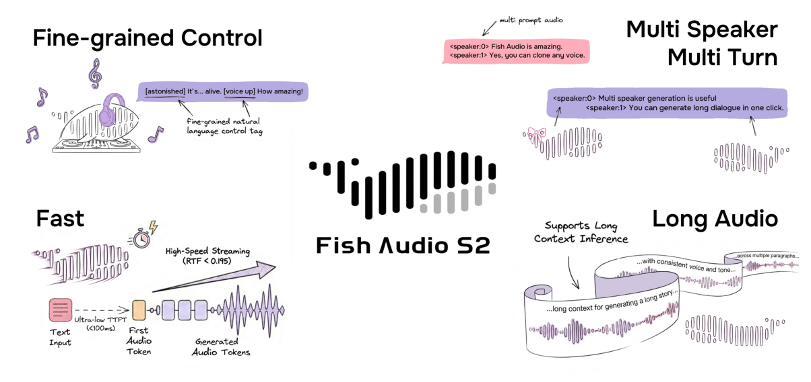
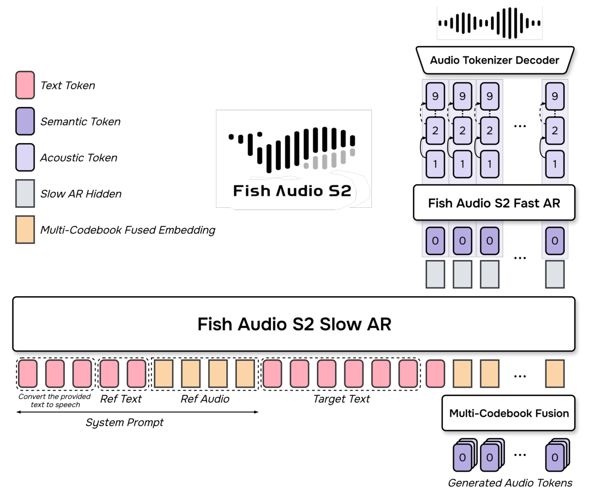
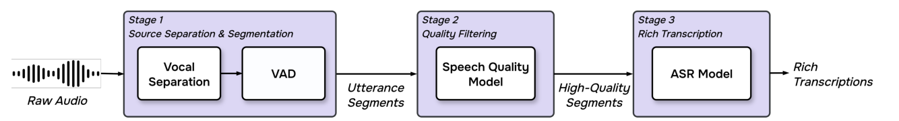
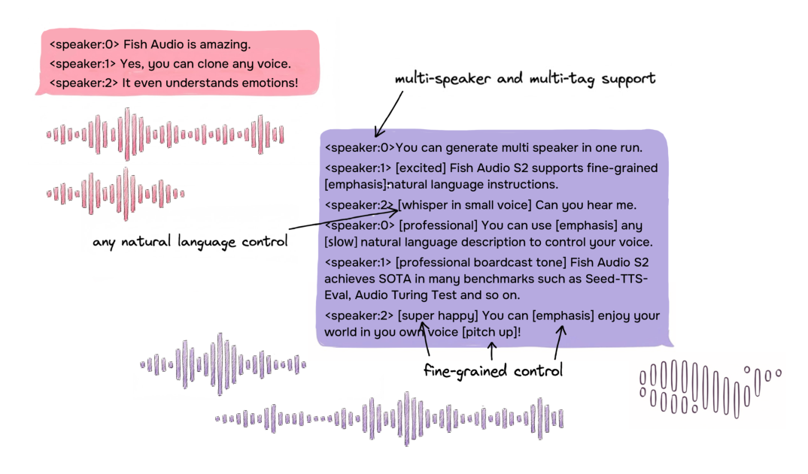
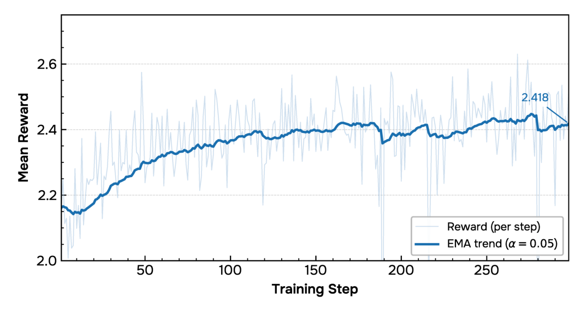

Fish Audio Team https://github.com/fishaudio/fish-speech https://huggingface.co/fishaudio/s2-pro https://fish.audio
摘要Abstract
We introduce Fish Audio S2, an open-sourced text-to-speech system featuring multi-speaker, multi-turn generation, and, most importantly, instructionfollowing control via natural-language descriptions. To scale training, we develop a multi-stage training recipe together with a staged data pipeline covering video captioning and speech captioning, voice-quality assessment, and reward modeling. To push the frontier of open-source TTS, we release our model weights, fine-tuning code, and an SGLang-based inference engine. The inference engine is production-ready for streaming, achieving an RTF of 0.195 and a time-to-first-audio below 100 ms. Our code and weights are available on GitHub and Hugging Face. We highly encourage readers to visit https://fish.audio to try custom voices.
我们介绍 Fish Audio S2：一个开源的文本转语音系统，支持多说话人、多轮生成，最重要的是支持通过自然语言描述进行指令跟随控制。为了扩大训练规模，我们开发了一套多阶段训练方案，并配套分阶段的数据流水线，覆盖视频字幕与语音字幕生成、语音质量评估和奖励建模。为推动开源 TTS 的前沿，我们公开了模型权重、微调代码，以及一个基于 SGLang 的推理引擎。该推理引擎已达到生产可用的流式水平，RTF（实时因子）为 0.195，首包音频时间（TTFA）低于 100 ms。我们的代码和权重已在 GitHub 和 Hugging Face 上开放。我们强烈建议读者访问 https://fish.audio 体验自定义声音。
1 1 引言Introduction

图Figure 1: Fish Audio S2 is a multilingual, controllable, and expressive TTS system supporting long-form, multi-speaker, multi-turn generation with ultra-low TTFA and RTF.
图 1：Fish Audio S2 是一个多语言、可控、富有表现力的 TTS 系统，支持长音频、多说话人、多轮生成，并具有超低的 TTFA 和 RTF。
High-quality, controllable text-to-speech (TTS) has become increasingly important in modern AI systems, enabling scalable audio content creation and natural conversational experiences across applications such as audiobook narration, video dubbing, and personalized chatbots. Recent progress in TTS has been driven by large-scale models (Zhang et al., 2025; Du et al., 2025; Li et al., 2026; Hu et al., 2026). Many of these works follow a two-stage paradigm: conditioned on text, the model first produces high-level discrete speech tokens, which are then decoded into the full waveform by a separate acoustic decoder (Wang et al., 2023; D´efossez et al., 2022; Kong et al., 2020; Anastassiou et al., 2024).
高质量、可控的文本转语音（TTS）在现代 AI 系统中越来越重要，它支撑了有声书朗读、视频配音、个性化聊天机器人等应用中的规模化音频内容创作和自然对话体验。TTS 近期的进展由大规模模型推动（Zhang et al., 2025; Du et al., 2025; Li et al., 2026; Hu et al., 2026）。其中许多工作遵循两阶段范式：以文本为条件，模型首先生成高层离散语音 token，再由独立的声学解码器将其解码为完整波形（Wang et al., 2023; Défossez et al., 2022; Kong et al., 2020; Anastassiou et al., 2024）。
Alongside these architectural innovations, the success of large-scale TTS relies heavily on robust data curation. Recent efforts have introduced sophisticated pipelines for cleaning speech corpora and annotating © 2026 39 AI, Inc All rights reserved. paralinguistic features (Cheng et al., 2025; Yang et al., 2025). However, generating fine-grained naturallanguage instructions for vocal features at scale remains a major bottleneck. From a training perspective, although reinforcement learning (RL) methods such as Direct Preference Optimization (DPO) (Rafailov et al., 2023), Proximal Policy Optimization (PPO) (Schulman et al., 2017) and Group Relative Policy Optimization (GRPO) (Shao et al., 2024) have become standard for improving model behavior in the large language model (LLM) domain (Guo et al., 2025; Agarwal et al., 2025), their adoption in TTS remains limited.
在这些架构创新之外，大规模 TTS 的成功还高度依赖稳健的数据策展。近期的工作引入了用于清洗语音语料和标注副语言特征的复杂流水线（Cheng et al., 2025; Yang et al., 2025）。（页脚：© 2026 39 AI, Inc All rights reserved.）然而，大规模地为声音特征生成细粒度的自然语言指令，仍然是一个主要瓶颈。从训练角度看，尽管直接偏好优化（DPO）（Rafailov et al., 2023）、近端策略优化（PPO）（Schulman et al., 2017）和组相对策略优化（GRPO）（Shao et al., 2024）等强化学习（RL）方法在大语言模型（LLM）领域已成为改善模型行为的标准手段（Guo et al., 2025; Agarwal et al., 2025），它们在 TTS 中的应用仍然有限。
In this report, we present Fish Audio S2, which retains the decoder-only Transformer backbone and RVQ- based audio codec of Fish Audio S1 (Liao et al., 2024b). We extends it with a unified data curation and RL alignment framework to improve controllability, naturalness, and robustness in speech generation. Specifically, we introduce two key technical innovations:
在本报告中，我们提出 Fish Audio S2，它保留了 Fish Audio S1 的仅解码器 Transformer 主干和基于 RVQ 的音频 codec（Liao et al., 2024b）。我们在此基础上扩展了一套统一的数据策展与 RL 对齐框架，以提升语音生成中的可控性、自然度和鲁棒性。具体而言，我们引入两项关键技术创新：
• Multi-Purpose Data Pipeline. We build a data pipeline with a speech quality assessment model and a rich-transcription ASR model to filter and annotate large-scale audio data for TTS pre-training. The same models are then directly reused as reward signals for RL alignment, eliminating distribution mismatch between the two stages. • Multi-Reward RL Alignment. We implement a variant of GRPO that jointly optimizes semantic accuracy, acoustic quality, and speaker similarity, ensuring a balance between expressiveness and robustness.
• 多用途数据流水线。我们构建了一条包含语音质量评估模型和富转录 ASR 模型的数据流水线，用于为 TTS 预训练过滤和标注大规模音频数据。同一批模型随后被直接复用为 RL 对齐的奖励信号，消除了两个阶段之间的分布失配。• 多奖励 RL 对齐。我们实现了一种 GRPO 变体，联合优化语义准确性、声学质量和说话人相似度，确保表现力与鲁棒性之间的平衡。
These innovations directly enable three major functional breakthroughs:
这些创新直接带来了三项主要功能突破：
• Enhanced Instruction Following. Fish Audio S2 exhibits superior adherence to natural language instructions. It enables broad and fine-grained control over speech generation through free-form textual descriptions. • Native Multi-Speaker and Multi-Turn Generation. The model can natively generate complex, interleaved dialogues involving multiple distinct speakers in a single pass, capturing the dynamics of natural conversation. • Stable Long-Form Synthesis. The system supports the generation of coherent and continuous audio, maintaining stability and consistency over extended durations.
• 增强的指令跟随。Fish Audio S2 对自然语言指令表现出更强的遵从能力。它通过自由形式的文本描述，实现对语音生成的广泛而细粒度的控制。• 原生多说话人与多轮生成。模型可以在单次生成中原生地产生涉及多个不同说话人的复杂交错对话，捕捉自然对话的动态。• 稳定的长音频合成。系统支持生成连贯、连续的音频，在较长时长内保持稳定性和一致性。
To evaluate our model, we conduct extensive experiments along two complementary tracks: (i) objective evaluation and (ii) LLM-as-a-Judge assessments of higher-level capabilities. For intelligibility, content accuracy, long-form, and multilingual performance, we report Word Error Rate (WER), Character Error Rate (CER), and speaker similarity on widely used benchmarks, including Seed-TTS-Eval (Anastassiou et al., 2024), MiniMax Multilingual Testset (Zhang et al., 2025), CosyVoice3-Eval (Du et al., 2025), Long-TTS-Eval (Wang et al., 2025a). Across public benchmarks, Fish Audio S2 shows consistently strong objective performance, achieving leading results on Seed-TTS benchmark while maintaining robust multilingual intelligibility and speaker similarity on both the MiniMax Multilingual Testset and CV3-Eval. To assess higher-level capabilities such as instruction following and human-likeness, we further employ the Audio Turing Test (Wang et al., 2025b) and Emergent TTS Eval (Manku et al., 2025). On the Audio Turing Test, Fish Audio S2 achieves a posterior mean of 0.483, which further improves to 0.515 with instruction rewriting. On Emergent TTS Eval, it reaches an overall win rate of 81.88% against the baseline, further supporting its strong instruction-following capability. Furthermore, to address the lack of dedicated benchmarks for fine-grained control, we introduce a novel evaluation benchmark, the Fish Audio Instruction Benchmark, which systematically evaluates models’ inline tag-following performance across English and Chinese. On the Fish Audio Instruction Benchmark, Fish Audio S2 achieves an overall tag-activation rate of 93.3% and an overall quality score of 4.51/5.0 across English and Chinese, as evaluated by Gemini 3 Pro.
为评估我们的模型，我们沿两条互补的路线开展了大量实验：（i）客观评测，以及（ii）针对高层能力的 LLM-as-a-Judge（大模型评审）评估。针对可懂度、内容准确性、长音频和多语言表现，我们在广泛使用的基准上报告词错误率（WER）、字错误率（CER）和说话人相似度，包括 Seed-TTS-Eval（Anastassiou et al., 2024）、MiniMax Multilingual Testset（Zhang et al., 2025）、CosyVoice3-Eval（Du et al., 2025）、Long-TTS-Eval（Wang et al., 2025a）。在公开基准上，Fish Audio S2 展现出持续强劲的客观性能，在 Seed-TTS 基准上取得领先结果，同时在 MiniMax Multilingual Testset 和 CV3-Eval 上保持了稳健的多语言可懂度和说话人相似度。为评估指令跟随和拟人度等高层能力，我们进一步采用 Audio Turing Test（Wang et al., 2025b）和 Emergent TTS Eval（Manku et al., 2025）。在 Audio Turing Test 上，Fish Audio S2 取得 0.483 的后验均值，经指令改写后进一步提升到 0.515。在 Emergent TTS Eval 上，它相对基线的总体胜率达到 81.88%，进一步支持其强大的指令跟随能力。此外，针对细粒度控制缺乏专门基准的问题，我们提出了一个新的评测基准——Fish Audio Instruction Benchmark，系统地评估模型在英文和中文上的内联标签跟随表现。在 Fish Audio Instruction Benchmark 上，Fish Audio S2 取得 93.3% 的总体标签激活率和 4.51/5.0 的总体质量分（中英文合并），由 Gemini 3 Pro 评判。
To accelerate research and lower the barrier to high-quality TTS development, we publicly release our model weights, fine-tuning code, and the SGLang-based inference engine on GitHub and Hugging Face. We also highly encourage readers to explore interactive demos at our official site https://fish.audio/.
为加速研究并降低高质量 TTS 开发的门槛，我们在 GitHub 和 Hugging Face 上公开了模型权重、微调代码和基于 SGLang 的推理引擎。我们也强烈建议读者到官方网站 https://fish.audio/ 体验交互式演示。
The remainder of this paper is organized as follows: Section 2 details the model architecture; Section 3 describes the data curation pipeline; Section 4 presents the pre-training and RL-based post-training; Section 5 instrodces our inference engine and its performance, Section 6 presents the experimental setup and comprehensive evaluation results; and finally, Section 7 concludes with a discussion on limitations and future directions.
本文其余部分组织如下：第 2 节详述模型架构；第 3 节介绍数据策展流水线；第 4 节介绍预训练与基于 RL 的后训练；第 5 节介绍我们的推理引擎及其性能；第 6 节给出实验设置与全面评测结果；最后第 7 节总结并讨论局限与未来方向。

图Figure 2: Fish Audio S2 architecture.
图 2：Fish Audio S2 架构。
2 2 架构Architecture
2.1 2.1 音频分词器Audio Tokenizer
Our audio tokenizer is built upon the architecture of the Descript Audio Codec (DAC) (Kumar et al., 2023), optimized for high-fidelity, real-time streaming at a 44.1 kHz sampling rate. The model employs a hierarchical Residual Vector Quantization (RVQ) strategy utilizing N codebooks (N=10 in our model): the primary codebook serves as the semantic codebook, while the remaining nine capture progressively finer-grained acoustic details.
我们的音频分词器构建在 Descript Audio Codec（DAC）（Kumar et al., 2023）的架构之上，面向 44.1 kHz 采样率下的高保真、实时流式场景做了优化。该模型采用分层的残差向量量化（RVQ）策略，使用 N 个码本（在我们的模型中 N=10）：第一个码本作为语义码本，其余 9 个码本则逐级捕捉更细粒度的声学细节。
Streaming Architecture. To adapt the vanilla DAC for low-latency TTS tasks, we introduce several key modifications to the encoder and decoder structures:
流式架构。为把原始 DAC 适配到低延迟 TTS 任务，我们对编码器和解码器结构做了若干关键修改：
• Causal Convolutions. We refactor the model to be strictly causal by replacing standard convolutions with masked causal convolutions. This ensures the generation process depends solely on past context, enabling low-latency streaming capabilities. • Transformer Bottleneck. Following the design of Mimi (D´efossez et al., 2024), we integrate causal sliding-window Transformer blocks both before and after the RVQ layers. By restricting attention to a fixed-size window, this mechanism models long-range dependencies with bounded memory usage, preventing out-of-memory issues during long-form inference. • Extended Downsampling.. The encoder extends the standard DAC encoder (512×) with additional ConvNeXt V2 (Woo et al., 2023) layers (4×), achieving a total downsampling ratio of 2048 and a compact frame rate of approximately 21 Hz. • EVA-GAN Decoder. Instead of the original DAC decoder, we employ the structure of EVA-GAN (Liao et al., 2024a) as our generator, which significantly improves parameter efficiency and synthesis quality, providing a more robust reconstruction of fine-grained acoustic details compared to the original DAC decoder.
• 因果卷积。我们用带掩码的因果卷积替换标准卷积，把模型重构为严格因果的形式。这确保生成过程只依赖过去的上下文，从而实现低延迟流式能力。• Transformer 瓶颈层。沿用 Mimi（Défossez et al., 2024）的设计，我们在 RVQ 层之前和之后都集成了因果滑动窗口 Transformer 块。通过把注意力限制在固定大小的窗口内，这一机制在内存占用有界的前提下建模长程依赖，避免长音频推理时的显存溢出问题。• 扩展下采样。编码器在标准 DAC 编码器（512×）的基础上增加了额外的 ConvNeXt V2（Woo et al., 2023）层（4×），实现 2048 的总下采样率和约 21 Hz 的紧凑帧率。• EVA-GAN 解码器。我们不用原始 DAC 解码器，而是采用 EVA-GAN（Liao et al., 2024a）的结构作为生成器，它显著提升了参数效率和合成质量，相比原始 DAC 解码器能更稳健地重建细粒度声学细节。
Semantic Distillation. To ensure that the first codebook captures rich linguistic and phonetic information, we adopt semantic distillation following (D´efossez et al., 2024). During training, an auxiliary semantic prediction head is jointly optimized to regress the 16th-layer activations of a pre-trained w2v-BERT 2.0 model (Barrault et al., 2023). By feeding the quantized features from the first codebook into this head, we encourage the bottleneck to retain rich semantic representations, thereby enabling more stable alignment in downstream TTS.
语义蒸馏。为确保第一个码本捕获丰富的语言学与语音学信息，我们采用沿袭 (Défossez et al., 2024) 的语义蒸馏。训练时，一个辅助语义预测头被联合优化，用于回归预训练 w2v-BERT 2.0 模型（Barrault et al., 2023）第 16 层的激活值。通过把第一个码本的量化特征送入该预测头，我们促使瓶颈层保留丰富的语义表示，从而让下游 TTS 的对齐更加稳定。
2.2 2.2 双重自回归生成Dual-Autoregressive Generation
When modeling high-fidelity acoustic features extracted by the audio tokenizer, directly flattening the 10-layer RVQ codebooks along the time axis leads to a tenfold increase in sequence length, severely limiting the LLM’s ability to handle long contexts. To address this dimensionality challenge, we apply a DualAutoregressive (Dual-AR) architecture (Liao et al. (2024b)) that decouples temporal semantic modeling from depth-wise acoustic modeling, as illustrated in Figure 2. This architecture comprises a core Temporal Semantic Backbone (Slow AR) coupled with a lightweight Depth-wise Acoustic Decoder (Fast AR).
在建模音频分词器提取的高保真声学特征时，如果把 10 层 RVQ 码本沿时间轴直接展平，序列长度会放大 10 倍，严重限制 LLM 处理长上下文的能力。为应对这一维度挑战，我们采用双重自回归（Dual-AR）架构（Liao et al. (2024b)），把时间维度的语义建模与深度维度的声学建模解耦，如图 2 所示。该架构由一个核心的时间语义主干（Slow AR，慢速自回归）和一个轻量的深度声学解码器（Fast AR，快速自回归）组成。
Slow AR. We adopt a pretrained Qwen3-4B as the Slow AR backbone. The Slow AR operates autoregressively over the full token sequence, which interleaves text tokens (e.g. system prompts, target text) with discrete audio tokens. During audio generation, it predicts the semantic token q(0) t from the first RVQ codebook at each time step t. Since this codebook undergoes semantic distillation during tokenizer training, the Slow AR can effectively plan linguistic content and coarse prosodic structure, analogous to standard text generation.
Slow AR。我们采用预训练的 Qwen3-4B 作为 Slow AR 主干。Slow AR 在完整 token 序列上自回归运行，该序列把文本 token（如系统提示、目标文本）与离散的音频生成时，它在每个时间步 t 从第一个 RVQ 码本预测语义 token q(0)_t。由于该码本在分词器训练中经过语义蒸馏，Slow AR 可以像标准文本生成一样，有效地规划语言内容和粗粒度韵律结构。
Fast AR. Given the semantic tokens generated by the Slow AR, we introduce a lightweight Fast AR network— consisting of 4 Transformer layers with independent weights and embedding tables—to reconstruct the remaining fine-grained acoustic details. At each time step t, the Slow AR first samples the semantic token q(0) t and emits a hidden state hslow t . The Fast AR then generates the remaining N−1 acoustic tokens q(1) t
Fast AR。在 Slow AR 生成语义 token 之后，我们引入一个轻量 Fast AR 网络——由 4 层权重和嵌入表均独立的 Transformer 组成——来重建剩余的细粒度声学细节。在每个时间步 t，Slow AR 先采样语义 token q(0)_t 并发出隐藏状态 h^slow_t。随后 Fast AR 生成其余 N−1 个声学 token
, . . . , q(N−1)t through a depth-wise autoregressive process. The hidden state hslow t is first linearly projected to the Fast AR’s dimension and placed at position 0 as a conditioning prefix, providing global context from the Slow AR. The semantic token q(0) t , already determined by the Slow AR, is then embedded and placed at position 1 as the seed input. The Fast AR then autoregressively generates q(1) t through q(N−1) t , where each step conditions on the conditioning prefix hslow t and all previously generated tokens. All N codebook layers share a single embedding table within the Fast AR; the codebook layer identity is encoded through RoPE positional embeddings. This highly asymmetric design—a 4B-parameter model along the time axis and a 4-layer network along the codebook depth axis—ensures high inference efficiency.
（公式续行：……t，通过深度方向（depth-wise）的自回归过程生成。）隐藏状态 h^slow_t 先被线性投影到 Fast AR 的维度，并放在位置 0 作为条件前缀，提供来自 Slow AR 的全局上下文。已由 Slow AR 确定的语义 token q(0)_t 随后被嵌入并放在位置 1 作为种子输入。随后 Fast AR 自回归地生成 q(1)_t 到 q(N−1)_t，每步都以条件前缀 h^slow_t 与此前已生成的全部 token 为条件。Fast AR 内部所有 N 个码本层共享同一个嵌入表；码本层的身份通过 RoPE 位置嵌入来编码。这种高度非对称的设计——时间轴上是 4B 参数的模型，码本深度轴上是 4 层网络——保证了高推理效率。
Multi-Codebook Fusion (MCF). After all N codebook tokens for time step t have been generated, they are aggregated into a single continuous vector xt+1 to serve as the Slow AR’s input embedding for the next time step t + 1. Each token q(k) t (k ∈{0, 1, . . . , N −1}) is embedded via a dedicated embedding layer E(k) that maps codebook indices into the Slow AR’s embedding space. These N codebook embeddings, together with the Slow AR’s own token embedding eLM t for the semantic token q(0) t , are summed: xt+1 = eLM t
多码本融合（MCF）。当时间步 t 的全部 N 个码本 token 生成完毕后，它们被聚合为单个连续向量 xt+1，作为 Slow AR 在下一个时间每个 token q(k)_t（k ∈ {0, 1, …, N−1}）由专属嵌入层 E(k) 映射到 Slow AR 的嵌入空间。这 N 个码本嵌入连同 Slow AR 自己对语义 token q(0)_t 的 token 嵌入 eLM_t 求和：x_{t+1} = eLM_t + Σ_{k=0..N−1} E(k)[q(k)_t]（式 1），其中 N = 10 为码本总数。
+N−1∑k=0 E(k) q(k) t, (1)where N = 10 is the total number of codebooks. Note that the semantic token q(0) t contributes two distinct representations: eLM t from the Slow AR’s token embedding layer, and E(0)[q(0) t ] from the codebook embedding layer. These two embedding tables are independently parameterized and capture complementary aspects of the same token.
这 N 个码本嵌入连同 Slow AR 自己对语义 token q(0)_t 的 token 嵌入 eLM_t 求和：x_{t+1} = eLM_t + Σ_{k=0..N−1} E(k)[q(k)_t]（式 1），其中 N = 10 为码本总数。注意语义 token q(0)_t 贡献两种不同的表示：来自 Slow AR token 嵌入层的 eLM_t，与来自码本嵌入层的 E(0)[q(0)_t]。这两个嵌入表独立参数化，捕捉同一 token 的互补侧面。
3 3 数据流水线Data Pipeline
Scaling TTS systems requires massive, high-quality datasets. Beyond basic noise reduction, the primary bottleneck lies in mapping subtle acoustic attributes (e.g., emotion and prosody) and speaker turns to natural language instructions—a process that is infeasible to scale manually. Moreover, RL alignment for TTS typically relies on reward models trained independently from the pre-training pipeline, which can introduce distribution shift between pre-training data and post-training objectives.
扩大 TTS 系统规模需要海量、高质量的数据集。除了基础的降噪之外，主要瓶颈在于把细微的声学属性（如情绪和韵律）以及说话人轮次映射为自然语言指令——这一过程无法靠人工规模化。此外，TTS 的 RL 对齐通常依赖独立于预训练流水线训练的奖励模型，这会在预训练数据与后训练目标之间引入分布偏移。

图Figure 3: Fish Audio S2 data pipeline.
图 3：Fish Audio S2 数据流水线。
To address both challenges, we design a three-stage data curation pipeline built around two core evaluation engines: a speech quality model and a rich-transcription ASR model. During pre-training, these engines act as strict filters and annotators; during RL-based post-training, they are directly reused as reward models. This dual-purpose design eliminates distribution shift between pre-training and post-training by construction, while enabling fine-grained vocal annotation in natural language to scale automatically without human intervention.
为同时应对这两个挑战，我们围绕两个核心评估引擎设计了一条三阶段数据策展流水线：一个语音质量模型和一个富转录 ASR 模型。在预训练阶段，这两个引擎充当严格的过滤器和标注器；在基于 RL 的后训练阶段，它们被直接复用为奖励模型。这种双用途设计在构造上消除了预训练与后训练之间的分布偏移，同时让自然语言的细粒度声音标注无需人工干预即可自动规模化。
To process raw audio into speech-text pairs with fine-grained vocal annotations, our pipeline executes three stages (Figure 3):
为把原始音频加工成带细粒度声音标注的语音-文本对，我们的流水线执行三个阶段（图 3）：
• Stage 1: Source Separation and Segmentation. We apply a vocal separation module to isolate clean speech from background noise, followed by Voice Activity Detection (VAD) to slice continuous audio into utterance-level segments.
• 阶段 1：源分离与切分。我们应用人声分离模块把干净语音从背景噪声中分离出来，随后用语音活动检测（VAD）把连续音频切成句子级片段。
• Stage 2: Quality Filtering. Our core speech quality model evaluates each utterance across multiple dimensions—including signal-to-noise ratio, speaker consistency, recording quality, and intelligibility— to filter out low-fidelity samples.
• 阶段 2：质量过滤。我们的核心语音质量模型从多个维度评估每条语句——包括信噪比、说话人一致性、录音质量和可懂度——以滤除低保真样本。
• Stage 3: Rich Transcription. An in-house ASR model generates highly accurate transcripts. This model simultaneously transcribes long-form spoken text and captions vocal features (e.g., emotion, prosody, paralinguistic) and speaker turns, creating descriptive natural language captions that directly enable the model’s zero-shot instruction-following capabilities.
• 阶段 3：富转录。一个自研 ASR 模型生成高准确率的转写文本。该模型同时转写长音频口语文本，并为声音特征（如情绪、韵律、副语言）和说话人轮次生成字幕，产出描述性的自然语言标注，直接赋予模型零样本指令跟随能力。
3.1 3.1 语音质量模型Speech Quality Model
Following the architectural design of Uni-VERSA (Shi et al., 2025), our speech quality model utilizes a pre-trained w2v-BERT 2.0 backbone coupled with a multi-layer perceptron head for acoustic evaluation. We train this network on a proprietary dataset of thousands of hours of Stage 1 audio with speech quality labels provided by human annotators, using a combined objective of MSE and focal loss (Lin et al., 2017). In Stage 2, this model acts as a strict filter, removing low-quality samples that slip through Stage 1, such as overlapping voices and residual background music, significantly reducing artifacts such as timbre inconsistency in the pre-training data. Consistent with our dual-purpose design, this same model is reused during the RL phase as an objective acoustic reward, penalizing noise and artifacts in the generated speech.
沿用 Uni-VERSA（Shi et al., 2025）的架构设计，我们的语音质量模型使用预训练的 w2v-BERT 2.0 主干，外接一个多层感知机头做声学评估。我们在一个专有数据集上训练该网络，数据为数千小时的阶段 1 音频，语音质量标签由人工标注员提供，训练目标为 MSE 与 focal loss（Lin et al., 2017）的组合。在阶段 2，该模型充当严格的过滤器，移除逃过阶段 1 的低质量样本，如重叠人声和残留背景音乐，显著减少预训练数据中音色不一致等伪影。与我们的双用途设计一致，同一个模型在 RL 阶段被复用为客观声学奖励，惩罚生成语音中的噪声和伪影。
3.2 3.2 富转录 ASR 模型Rich-Transcription ASR Model
We develop a rich-transcription ASR model by fine-tuning the Qwen3-Omni-30B-A3B foundation model to jointly transcribe spoken content and annotate speaker turns and vocal events. The training data were curated using a video-based pseudo-labeling approach, followed by human verification to ensure annotation accuracy.
我们通过对 Qwen3-Omni-30B-A3B 基础模型做微调，开发了一个富转录 ASR 模型，联合转写口语内容并标注说话人轮次与声音事件。训练数据采用基于视频的伪标注方法策展，随后经人工核验以确保标注准确性。
In Stage 3, this model jointly transcribes spoken content and annotates vocal features as natural language instructions. Specifically, it predicts speaker turns (e.g., <|speaker:0|>) and injects vocal instructions such as [prolonged laugh], [inhale], [angry], [emphasis] and [in a hurry] directly into the text stream alongside natural disfluencies. An example of the output format is shown in Figure 4. These transcripts serve as the fine-grained natural language instructions for training the zero-shot controllable generation capabilities of Fish Audio S2.
在阶段 3，该模型联合转写口语内容，并把声音特征标注为自然语言指令。具体来说，它预测说话人轮次（如 <|speaker:0|>），并把 [prolonged laugh]、[inhale]、[angry]、[emphasis]、[in a hurry] 等声音指令连同自然的不流畅现象一起，直接注入文本流。输出格式的示例见图 4。这些转写结果就是用于训练 Fish Audio S2 零样本可控生成能力的细粒度自然语言指令。
Consistent with our dual-purpose design, this model is reused during RL-based post-training as an intelligibility and instruction-following reward. By re-transcribing the generated audio and comparing it against the
与我们的双用途设计一致，该模型在基于 RL 的后训练中被复用为可懂度与指令跟随奖励。通过对生成音频做再转写，并将其与

图Figure 4: Fish Audio S2 supports multi-speaker generation with fine-grained natural language control over prosody, emotion, and speaking style.
图 4：Fish Audio S2 支持多说话人生成，并可对韵律、情绪和说话风格做细粒度自然语言控制。
original prompt, it provides reward signals that penalize hallucinations, missing words, and ignored vocal instructions.
原始提示进行比对，它提供的奖励信号会惩罚幻觉、漏词和被忽略的声音指令。
4 4 训练Training
The training pipeline of Fish Audio S2 proceeds in four stages. We first train the audio tokenizer to obtain discrete audio representations, then progressively align the LLM with these discrete representations through large-scale pre-training and supervised fine-tuning (SFT) on curated data, and finally refine generation quality via RL-based post-training.
Fish Audio S2 的训练流水线分四个阶段推进。我们首先训练音频分词器以获得离散音频表示，然后通过大规模预训练和在策展数据上的 SFT（监督微调），逐步让 LLM 与这些离散表示对齐，最后通过基于 RL 的后训练打磨生成质量。
4.1 4.1 音频分词器训练Audio Tokenizer Training
The complete audio tokenizer, totaling 446M parameters, is trained for 1M steps. We employ a composite GAN loss framework to ensure perceptual fidelity, utilizing three distinct discriminators: a multi-period discriminator to capture periodic signals, a multi-resolution discriminator for spectral consistency, and a multi-scale STFT discriminator to ensure high-frequency detail and phase coherence.
完整的音频分词器共 446M 参数，训练 1M 步。我们采用复合 GAN 损失框架来保证感知保真度，使用三个不同的判别器：多周期判别器捕捉周期性信号，多分辨率判别器保证频谱一致性，多尺度 STFT 判别器确保高频细节与相位相干性。
4.2 4.2 预训练与 SFTPre-training and SFT
The pre-training phase aligns the audio tokens with the Qwen3-4B foundation model through two progressive stages. The first stage establishes cross-modal alignment with a maximum context length of 8,192 tokens; the second stage extends the context to 16,384 tokens, enabling long-form audio synthesis and multi-turn multi-speaker conversational generation. In total, the pre-training phase utilizes over 10 million hours of raw audio across approximately 80 languages and dialects. After pre-training, we perform SFT on curated internal high-quality labelled data to improve expressiveness and controllability.
预训练阶段通过两个递进阶段，把音频 token 与 Qwen3-4B 基础模型对齐。第一阶段在最大上下文长度 8,192 token 下建立跨模态对齐；第二阶段把上下文扩展到 16,384 token，从而支持长音频合成和多轮多说话人生成。预训练阶段累计使用超过 10 million 小时的原始音频，覆盖约 80 种语言和方言。预训练之后，我们在策展的内部高质量标注数据上做 SFT，以提升表现力和可控性。
We expanded the Qwen3-4B vocabulary with structural control tokens and 4,096 semantic tokens. To ensure a smooth feature space transition, the new token embeddings are initialized by sampling from a multivariate normal distribution N (µ, Σ), where µ and Σ are the empirical mean and covariance of the existing text embedding matrix.
我们用结构化控制 token 和 4,096 个语义 token 扩充了 Qwen3-4B 的词表。为保证特征空间平滑过渡，新 token 的嵌入通过从多元正态分布 N (µ, Σ) 中采样来初始化，其中 µ 和 Σ 是现有文本嵌入矩阵的经验均值与协方差。
Unlike Fish Audio S1, which appends reference audio to the user input, S2 prepends the reference audio to the system prompt. The loss of the reference audio tokens is masked during training to prevent verbatim memorization. For fine-grained acoustic control, rather than relying on lengthy global prompts, we inject descriptive instructions at specific word or phrase positions within the dialogue context, enabling precise localized control over acoustic details. These instructions take the form of natural language—such as whisper, angry, and laugh—embedded directly in the token sequence. Through autoregressive training on large-scale data, the model naturally internalizes the mapping between these textual cues and localized acoustic variations without requiring dedicated control tokens.
与把参考音频追加到用户输入之后的 Fish Audio S1 不同，S2 把参考音频前置到系统提示中。训练时参考音频 token 的损失被掩码掉，以防止逐字记忆。为实现细粒度声学控制，我们不依赖冗长的全局提示，而是把这些指令以自然语言形式出现——如 whisper、angry 和 laugh——直接嵌入 token 序列。通过在大规模数据上的自回归训练，模型自然地内化了这些文本线索与局部声学变化之间的映射，而不需要专门的控制 token。
The training objective follows standard autoregressive language modeling, adapted for the Dual-AR architecture with a separate loss for each component. For the Slow AR, the training objective is defined as:
训练目标遵循标准自回归语言建模，并针对 Dual-AR 架构为每个组件设置单独的损失。对 Slow AR，训练目标定义为：
Lslow = − T−1
（公式：L_slow = −Σ_{t=0..T−1} m_t·λ_t·log P(x_t | x_{<t})（式 2），其中 m_t ∈ {0, 1} 为参考掩码（系统提示与参考音频 token 处 m_t = 0，其余为 1）。）
∑t=0 mt λt log P(xt | x<t),(2)where mt ∈{0, 1} is the reference mask (mt = 0 for system prompt and reference audio tokens, mt = 1 otherwise). The Fast AR loss Lfast supervises the depth-wise generation of audio tokens q(0) t
（公式：L_slow = −Σ_{t=0..T−1} m_t·λ_t·log P(x_t | x_{<t})（式 2），其中 m_t ∈ {0, 1} 为参考掩码（系统提示与参考音频 token 处 m_t = 0，其余为 1）。）Fast AR 损失 L_fast 监督音频 token q(0)_t 的深度方向生成（公式见下）。
, . . . , q(N−1)t,conditioned on the Slow AR hidden state hslow t
（公式续行：……_t，以 Slow AR 隐藏状态 h^slow_t 为条件：）
:Lfast = −
（公式：L_fast = −[1/Σ_{k=0..N−1} w(k)] · Σ_{k=0..N−1} w(k)·log P(q(k)_t | h^slow_t, q(<k)_t)（式 3），其中 w(k) 为第 k 个声学 token 的权重。）
1∑N−11w(k) N−1∑k=0 w(k) log P(q(k) t | hslow t , q(<k) t
（公式：L_fast = −[1/Σ_{k=0..N−1} w(k)] · Σ_{k=0..N−1} w(k)·log P(q(k)_t | h^slow_t, q(<k)_t)（式 3），其中 w(k) 为第 k 个声学 token 的权重。）
), (3)where w(k) is the weight for the k-th acoutic token. During pre-training, w(k) = 1 uniformly for all codebook layers including k = 0, where predicting the semantic token serves as an auxiliary objective that helps the Fast AR learn to extract information from the Slow AR’s projected hidden state. During SFT, we remove the semantic token prediction and apply a progressively decayed weighting strategy over the remaining codebooks to better align training with the inference setting, where the semantic token q(0) t is sampled from the Slow AR, while concentrating model capacity on the coarse-grained acoustic codebooks that contribute most to perceptual quality. The total loss combines both components:
（公式：L_fast = −[1/Σ_{k=0..N−1} w(k)] · Σ_{k=0..N−1} w(k)·log P(q(k)_t | h^slow_t, q(<k)_t)（式 3），其中 w(k) 为第 k 个声学 token 的权重。）预训练期间，包括 k = 0 在内的所有码本层统一取 w(k) = 1，此时预测语义 token 是一个辅助目标，帮助 Fast AR 学会从 Slow AR 投影来的隐状态中提取信息。SFT 阶段我们移除语义 token 预测，并对剩余码本采用渐进衰减的加权策略：推理时语义 token q(0)_t 由 Slow AR 采样，此举让训练与推理设置对齐，同时把模型容量集中到对感知质量贡献最大的粗粒度声学码本上。总损失组合两个组件：
Ltotal = λslow Lslow + λfast Lfast. (4)The entire pre-training framework is built upon Fully Sharded Data Parallel (FSDP), with a differential learning rate strategy that applies a reduced learning rate to the text foundation parameters while using a higher learning rate for the audio modules. Combined with a Warmup-Stable-Decay (WSD) scheduling strategy (Hu et al., 2024), this ensures stable training at scale with high throughput.
整个预训练框架基于 Fully Sharded Data Parallel（FSDP）构建，采用差异化学习率策略：文本基础参数用较低学习率，音频模块用较高学习率。结合 Warmup-Stable-Decay（WSD）调度策略（Hu et al., 2024），这保证了大规模训练在高吞吐下保持稳定。
4.3 4.3 基于 RL 的后训练RL-Based Post-Training
Following the pre-training and SFT phases, the RL-based post-training phase aims to mitigate hallucinations, token skipping, and timbre drift commonly observed in autoregressive audio generation. Audio generation involves extremely long sequences, making standard PPO prohibitively expensive due to the need to maintain a large value model in memory. We therefore adopt an RL algorithm inspired by GRPO (Shao et al., 2024) and Dr.GRPO (Liu et al., 2025), which eliminates the value network entirely by estimating advantages from group-level statistics. Specifically, for a given prompt, the model independently samples G candidate outputs {y1, . . . , yG} and computes advantages:
在预训练和 SFT 阶段之后，基于 RL 的后训练阶段旨在缓解自回归音频生成中常见的幻觉、跳 token 和音色漂移。音频生成涉及极长的序列，标准 PPO 需要在显存中维护一个大型价值模型，代价高到难以承受。因此我们采用一种受 GRPO（Shao et al., 2024）和 Dr.GRPO（Liu et al., 2025）启发的 RL 算法，它通过组级统计估计优势，完全取消了价值网络。具体来说，对给定提示，模型独立采样 G 个候选输出 {y1, …, yG}，并计算优势：
Ai = Ri −¯R, i ∈{1, . . . , G}, (5)where Ri is the reward for the i-th candidate, ¯R is the intra-group mean. Following Dr.GRPO, we remove normalization by the intra-group standard deviation to avoid sample-level difficulty bias, where samples with low reward variance receive disproportionately large gradient updates. These advantages are then used to optimize both components of the Dual-AR architecture. The Slow AR policy loss is defined as:
其中 Ri 是第 i 个候选的奖励，R̄ 是组内均值。沿用 Dr.GRPO，我们去掉组内标准差归一化，以避免样本级难度偏置——即奖励方差小的样本会获得不成比例的大梯度更新。这些优势随后被用于优化 Dual-AR 架构的两个组件。Slow AR 的策略损失定义为：
|T|
（公式片段：L^RL_slow = −(1/|T|)·Σ_{t=1..|T|} A_i·log π_θ(x_t | x_{<t}) + β·D_KL(t)（式 6）。）
∑t=1 Ai log πθ(xt | x<t) + β D(t) KL,
（公式片段：L^RL_slow = −(1/|T|)·Σ_{t=1..|T|} A_i·log π_θ(x_t | x_{<t}) + β·D_KL(t)（式 6）。）
(6)LRL slow = −1 T
（公式片段：L^RL_slow = −(1/|T|)·Σ_{t=1..|T|} A_i·log π_θ(x_t | x_{<t}) + β·D_KL(t)（式 6）。）

图Figure 5: Training reward curves during RL-based post-training.
图 5：基于 RL 的后训练期间的训练奖励曲线。
where D(t) KL is the per-token KL divergence between the current policy and the reference policy, computed via the Schulman estimator. The Fast AR loss follows the same formulation but operates independently over each audio token q(k) t , sharing the same advantage signal:
其中 D(t)_KL 是当前策略与参考策略之间的逐 token KL 散度，用 Schulman 估计量计算。/ T
C(k) ∑ t,k Ai log πFA θ (q(k) t | q(<k) t
（公式片段：C(k) Σ_{t,k} A_i log π^FA_θ(q(k)_t | q(<k)_t …，见原文。）
) + β D(t,k)KL ,(7)LRL fast = −1 where C(k) is the k-th codebook size. The total RL loss combines both components:
（公式片段：L^RL_fast = −1·…·KL（式 7），其中 C(k) 为第 k 个码本的大小。）总 RL 损失组合两个组件：
LRL = LRL slow + γ LRL fast. (8)As speech generation quality spans multiple perceptual dimensions, we constructed a multi-dimensional, orthogonal, and anti-hacking reward system. The final composite reward signal Rtotal is a weighted fusion of feedback from three distinct dimensions:
由于语音生成质量横跨多个感知维度，我们构建了一个多维度、相互正交且防刷分（anti-hacking）的奖励系统。最终的复合奖励信号 Rtotal 是来自三个不同维度反馈的加权融合：
Rtotal = λSTT · RSTT + λPref · RPref + λSIM · RSIM. (9)The semantic accuracy reward RSTT utilizes the ASR caption model from the data pipeline (Section 3) that extracts per-token confidences as continuous signals. To enforce strict instruction following, we implemented a token-weighted mask that applies substantially stronger penalties to incorrect speaker ID tags and additional penalties to missed vocal instructions. The acoustic preference reward RPref is scored by the speech quality model from the data pipeline (Section 3). The timbre similarity reward RSIM utilizes an external voiceprint model to extract features and compute cosine similarity. Figure 5 shows that the total reward Rtotal (per-step mean over the batch) rises consistently before convergence, demonstrating the effectiveness of our multi-dimensional reward design in providing stable and coherent training signal throughout RL post-training.
语义准确性奖励 RSTT 利用数据流水线中的 ASR 字幕模型（第 3 节），提取逐 token 置信度作为连续信号。为强制执行严格的指令跟随，我们实现了按 token 加权的掩码：对错误的说话人 ID 标签施加显著更强的惩罚，对遗漏的声音指令施加额外惩罚。声学偏好奖励 RPref 由数据流水线中的语音质量模型（第 3 节）打分。音色相似度奖励 RSIM 使用外部声纹模型提取特征并计算余弦相似度。图 5 显示，总奖励 Rtotal（batch 内逐步均值）在收敛前持续上升，证明我们的多维奖励设计能在整个 RL 后训练过程中提供稳定、连贯的训练信号。
In terms of system and optimization dynamics, to prevent computationally heavy scoring models from idling the primary node, we abstracted the entire scoring system into an asynchronous, decoupled architecture. Combined with a centralized waveform cache, this maximizes the rollout throughput during the RL-based post-training phase. To efficiently compute the KL divergence penalty in the policy loss without perpetually hosting a redundant full reference model in VRAM, we design a LoRA weight-swap mechanism: the reference policy is maintained as a LoRA weight backup in CPU memory and dynamically swapped in for gradient-free forward passes during divergence computation, significantly reducing peak memory footprint. We employ rank-stabilized LoRA (rsLoRA, r = 16, α = 64) (Kalajdzievski, 2023), updating exclusively the MLP layers.
在系统与优化动态方面，为防止计算量大的打分模型让主节点空转，我们把整个打分系统抽象为异步、解耦的架构。结合集中式波形缓存，这最大化了 RL 后训练阶段的 rollout 吞吐。为高效计算策略损失中的 KL 散度惩罚，同时不必在显存中常驻一个冗余的完整参考模型，我们设计了 LoRA 权重交换机制：参考策略以 LoRA 权重备份的形式保存在 CPU 内存中，在计算散度时动态换入做无梯度前向，显著降低了峰值显存占用。我们采用 rank-stabilized LoRA（rsLoRA，r = 16，α = 64）（Kalajdzievski, 2023），只更新 MLP 层。
5 5 推理引擎Inference Engine
To achieve high-throughput and ultra-low latency in production deployments, our inference engine is built upon SGLang (Zheng et al., 2024), a state-of-the-art (SOTA) serving framework originally designed for LLMs. SGLang provides a highly optimized execution backend featuring continuous batching, paged KV cache, CUDA graph replay, and notably, RadixAttention for efficient prefix caching. By leveraging this advanced serving infrastructure, we can maximize GPU utilization and minimize generation latency.
为在生产部署中实现高吞吐和超低延迟，我们的推理引擎构建在 SGLang（Zheng et al., 2024）之上——这是一个最初为 LLM 设计的先进（SOTA）服务框架。SGLang 提供高度优化的执行后端，具备连续批处理、分页 KV cache、CUDA graph 回放，以及值得注意的用于高效前缀缓存的 RadixAttention。借助这套先进的服务基础设施，我们可以最大化 GPU 利用率并最小化生成延迟。
Notably, achieving this high performance does not require massive modifications to the underlying engine. As our Dual-AR architecture is structurally isomorphic to standard autoregressive text LLMs, the autoregressive complexity is fully encapsulated within the native forward pass. The SGLang core scheduler and execution engine remain completely agnostic to the audio modality, allowing us to inherit all LLM-native optimizations with zero friction. To adapt this framework for audio generation, we introduced serveral targeted modifications.
值得注意的是，实现这样的高性能并不需要对底层引擎做大规模修改。由于我们的 Dual-AR 架构在结构上与标准自回归文本 LLM 同构，自回归的复杂性被完全封装在原生前向传播之内。SGLang 的核心调度器和执行引擎对音频模态完全无感知，使我们能零摩擦地继承所有 LLM 原生优化。为把该框架适配到音频生成，我们引入了若干针对性修改。
First, we implemented an I/O bypass at the API level (skipping the standard text tokenizer and detokenizer), allowing mixed prompts consisting of semantic inputs and discrete acoustic tokens, with streaming acoustic token ID outputs. Second,We extend the original RadixCache, which was designed for indexing individual text tokens, by introducing minimal multi-token indexing keys that jointly encode semantic and acoustic tokens. This modification enables RadixCache to cache diverse reference audio contexts, significantly improving KV cache hit rates in real-world serving environments.Third, to maximize GPU utilization, we analyze the system bottlenecks and find that LLM decoding is predominantly memory-bandwidth bound. We therefore leverage MPS to co-schedule vocoder decoding with LLM decoding on the same GPU, enabling concurrent execution that improves system throughput while preserving low latency.
第一，我们在 API 层实现了 I/O 旁路（跳过标准文本分词器和反分词器），允许由语义输入和离散声学 token 组成的混合提示，并以流式方式输出声学 token ID。第二，我们扩展了原本为索引单个文本 token 设计的 RadixCache，引入联合编码语义 token 与声学 token 的最小多 token 索引键。这一修改使 RadixCache 能缓存多样的参考音频上下文，显著提高真实服务环境中的 KV cache 命中率。第三，为最大化 GPU 利用率，我们分析了系统瓶颈，发现 LLM 解码主要受显存带宽限制。因此我们利用 MPS 把声码器解码与 LLM 解码在同一张 GPU 上协同调度，实现并发执行，在保持低延迟的同时提升系统吞吐。
We evaluated the production-ready inference performance of Fish Audio S2 on a single NVIDIA H200 GPU. Thanks to the lightweight Dual-AR architecture and SGLang optimizations, the system achieves industry-leading generation metrics:
我们在单张 NVIDIA H200 GPU 上评测了 Fish Audio S2 生产可用的推理性能。得益于轻量的 Dual-AR 架构和 SGLang 优化，系统达到了业界领先的生成指标：
• Real-Time Factor (RTF). The model achieves an exceptional RTF of 0.195, generating high-fidelity audio vastly faster than real-time. • Time-to-First-Audio (TTFA). Benefiting from audio tokenizer decoding co-scheduling and RadixCache hits, the system achieves a time-to-first-audio (TTFA) as low as 100 ms in the production serving environment. • Throughput. Under high concurrency, the engine sustains a maximum throughput of 3000+ acoustic tokens per second while keeping the RTF below 0.5, enabling real-time streaming synthesis even under heavy load and demonstrating its readiness for large-scale production serving.
• 实时因子（RTF）。模型取得 0.195 的出色 RTF，生成高保真音频的速度远超实时。• 首包音频时间（TTFA）。受益于音频分词器解码协同调度和 RadixCache 命中，系统在生产服务环境中实现低至 100 ms 的首包音频时间（TTFA）。• 吞吐。在高并发下，引擎保持每秒 3000+ 声学 token 的峰值吞吐，同时 RTF 低于 0.5，即使在重负载下也能支持实时流式合成，证明其已具备大规模生产服务能力。
Beyond raw throughput and latency, this architectural alignment also enables highly efficient voice reuse in production. As described in Section 4, Fish Audio S2 inserts the deterministic reference-audio tokens into the system prompt. During inference, SGLang’s Radix tree caches the corresponding KV states. When the same voice is reused across multiple requests, this design delivers a high prefix-cache hit rate (86.4% on average and over 90% at peak). As a result, repeated requests can largely skip the reference-audio prefill stage, making prompt-processing overhead nearly negligible.
除了原始吞吐和延迟，这种架构对齐还在生产中实现了高效的声音复用。如第 4 节所述，Fish Audio S2 把确定性的参考音频 token 插入系统提示。推理时，SGLang 的 Radix 树缓存对应的 KV 状态。当同一声音跨多个请求复用时，该设计带来很高的前缀缓存命中率（平均 86.4%，峰值超过 90%）。因此，重复请求可以大量跳过参考音频的 prefill 阶段，使提示处理开销几乎可以忽略。
6 6 评测Evaluation
We conduct a comprehensive evaluation of Fish Audio S2 across two primary dimensions. First, we utilize traditional objective metrics, focusing on WER, CER, and speaker similarity (SIM) to measure transcription accuracy and acoustic fidelity. Second, we employ an LLM-as-a-Judge benchmark to assess nuanced subjective qualities, specifically evaluating the model’s instruction-following capabilities and overall speech naturalness.
我们从两个主要维度对 Fish Audio S2 做了全面评测。第一，我们使用传统客观指标，聚焦 WER、CER 和说话人相似度（SIM），衡量转写准确性和声学保真度。第二，我们采用 LLM-as-a-Judge 基准评估细腻的主观质量，具体考察模型的指令跟随能力和整体语音自然度。
6.1 6.1 客观评测Objective Evaluation
Our objective evaluation covers three components: (1) voice-cloning intelligibility on Seed-TTS-Eval (English and Chinese); (2) multilingual intelligibility and speaker similarity on CV3-Eval and the Minimax Multilingual Testset; and (3) long-form generation quality on a modified Long-TTS-Eval (Wang et al., 2025a).
我们的客观评测覆盖三个部分：（1）在 Seed-TTS-Eval（英文与中文）上的声音克隆可懂度；（2）在 CV3-Eval 和 Minimax Multilingual Testset 上的多语言可懂度与说话人相似度；（3）在修改版 Long-TTS-Eval（Wang et al., 2025a）上的长音频生成质量。
6.1.1 6.1.1 Seed-TTS-EvalSeed-TTS-Eval
Table 1: Results on Seed-TTS-Eval.
表 1：Seed-TTS-Eval 上的结果。
| WER (%) ↓ | ||||||
|---|---|---|---|---|---|---|
| test-zh | test-en | zh-hard | ||||||
| Fish Audio S2 | 0.54 | | | 0.99 | | | 5.99 | |
| Fish Audio S1 | 0.54 | | | 1.07 | | | 17.00 | |
| CosyVoice 3-1.5B (Du et al., 2025) | 1.12 | | | 2.21 | | | 5.83 | |
| Qwen3-TTS (Hu et al., 2026) | 0.77 | | | 1.24 | | | – | |
| Qwen3-Omni (Xu et al., 2025b) | 1.07 | | | 1.39 | | | – | |
| FireRedTTS-2 (Xie et al., 2025) | 1.14 | | | 1.95 | | | – | |
| Seed-TTS (Anastassiou et al., 2024) | 1.12 | | | 2.25 | | | 7.59 | |
| 0.99 | | | 1.90 | | | – |
Minimax Speech-02 (Zhang et al., 2025)We assess voice-cloning intelligibility on Seed-TTS-Eval using WER over the test-zh, test-en, and ZH-hard splits. WER is computed by transcribing synthesized audio with Whisper-large-v3 (Radford et al., 2023) for English and Paraformer-zh Gao et al. (2023) for Chinese, following the benchmark protocol; results are reported in Table 1.
/ TWER 按基准协议计算：英文用 Whisper-large-v3（Radford et al., 2023）、中文用 Paraformer-zh（Gao et al., 2023）转写合成音频；结果报告在表 1。
Compared with other open-source and closed-source models, Fish Audio S2 achieves leading WER on both Chinese and English, while remaining competitive on ZH-hard. This indicates clearer and more stable pronunciation in the voice-cloning task.
与其他开源和闭源模型相比，Fish Audio S2 在中文和英文上都取得领先的 WER，并在 ZH-hard 上保持竞争力。这表明它在声音克隆任务中的发音更清晰、更稳定。
6.1.2 6.1.2 多语言评测Multilingual Evaluation
To evaluate multilingual correctness, we test on the Minimax Multilingual Testset and CV3-Eval. The CV3- Eval benchmark covers 9 major languages and is designed to comprehensively measure zero-shot speech synthesis and expressive voice cloning performance in unrestrained, in-the-wild settings. The Minimax Multilingual Testset covers 24 major languages and is designed to comprehensively measure speech synthesis and zero-shot voice cloning performance in multilingual settings.
为评估多语言正确性，我们在 Minimax Multilingual Testset 和 CV3-Eval 上测试。CV3-Eval 基准覆盖 9 种主要语言，旨在无约束的真实场景（in-the-wild）下全面衡量零样本语音合成和富有表现力的声音克隆性能。Minimax Multilingual Testset 覆盖 24 种主要语言，旨在多语言设定下全面衡量语音合成和零样本声音克隆性能。
As shown in Table 3 and Table 2, Fish Audio S2 demonstrates strong multilingual intelligibility, robust speaker preservation, and high content fidelity in zero-shot voice cloning. On the Minimax Multilingual Testset, it achieves the lowest WER in 11 out of 24 languages and the highest SIM in 17 out of 24. This trend is further validated on the 9-language CV3-Eval subset, where Fish Audio S2 attains the best error rate across all reported languages, outperforming CosyVoice variants by clear margins and reducing the average error from 3.96 to 3.01 (a 23.9% relative reduction) compared to Fish Audio S1. Performance gains are particularly consistent in Chinese, English, Japanese, Korean, and major European languages. While MiniMax-Speech and ElevenLabs still maintain an advantage in certain low-resource languages (typically those with under 1,000 hours of training data), Fish Audio S2 remains competitive in intelligibility and frequently achieves superior SIM, highlighting its stronger cross-lingual timbre consistency.
如表 3 和表 2 所示，Fish Audio S2 在零样本声音克隆中展现出很强的多语言可懂度、稳健的说话人保持和高内容保真度。在 Minimax Multilingual Testset 上，它在 24 种语言中的 11 种上取得最低 WER，并在 24 种中的 17 种上取得最高 SIM。这一趋势在 9 语言的 CV3-Eval 子集上得到进一步验证：Fish Audio S2 在所有报告语言上都取得最佳错误率，以明显优势超过 CosyVoice 各变体，并相比 Fish Audio S1 把平均错误率从 3.96 降到 3.01（相对降低 23.9%）。性能提升在中文、英文、日文、韩文和主要欧洲语言上尤为一致。尽管 MiniMax-Speech 和 ElevenLabs 在某些低资源语言（通常是训练数据不足 1,000 小时的语言）上仍保持优势，Fish Audio S2 在可懂度上保持竞争力，并频繁取得更优的 SIM，凸显其更强的跨语言音色一致性。
Table 2: Results on CV3-Eval multilingual voice cloning subset.
表 2：CV3-Eval 多语言声音克隆子集上的结果。
| WER (%) ↓ | ||||||||||||||
|---|---|---|---|---|---|---|---|---|---|---|---|---|---|---|
| Model | ||||||||||||||
| zh | en | ja | ko | de | es | fr | it | ru | hard-zh | hard-en | ||||
| Fish Audio S2 | 2.65 | 2.43 | 3.96 | 2.76 | 2.22 | 2.00 | 6.26 | 2.04 | 2.78 | 9.10 | 4.40 | |||
| Fish Audio S1 | 2.98 | 3.00 | 4.54 | 3.19 | 2.78 | 2.84 | 8.15 | 2.94 | 5.18 | 9.72 | 7.26 | |||
| CosyVoice2 + DiffRO | 3.00 | 4.72 | 6.36 | 5.14 | – | – | – | – | – | 10.66 | 10.25 | |||
| CosyVoice3-0.5B + DiffRO | 2.89 | 3.68 | 5.15 | 4.02 | 4.51 | 2.99 | 8.56 | 2.94 | 3.79 | 8.26 | 7.60 | |||
| CosyVoice3-1.5B + DiffRO | 3.01 | 3.71 | 5.27 | 4.01 | 3.93 | 3.26 | 8.09 | 2.72 | 4.11 | 9.06 | 7.56 |
Model WER (%) ↓ zh en ja ko de es fr it ru hard-zh hard-en Fish Audio S2
表头：Model / WER (%) ↓（zh / en / ja / ko / de / es / fr / it / ru / hard-zh / hard-en）——Fish Audio S2（后续照原文）。
Table 3: Results on the Minimax Multilingual Testset.
表 3：Minimax Multilingual Testset 上的结果。
| Language | ||||||||
|---|---|---|---|---|---|---|---|---|
| Arabic | 1.665 | 1.666 | 3.500 | 6.420 | 0.736 | 0.706 | 0.750 | 0.713 |
| Cantonese | 34.111 | 51.513 | 30.670 | 48.800 | 0.778 | 0.670 | 0.805 | 0.773 |
| Chinese | 2.252 | 16.026 | 0.730 | 0.980 | 0.780 | 0.677 | 0.816 | 0.777 |
| Czech | 3.875 | 2.108 | 2.840 | 18.020 | 0.796 | 0.685 | 0.798 | 0.733 |
| Dutch | 1.143 | 0.803 | 0.990 | 2.270 | 0.738 | 0.680 | 0.730 | 0.701 |
| English | 2.164 | 2.339 | 1.620 | 2.370 | 0.756 | 0.613 | 0.797 | 0.785 |
| Finnish | 4.666 | 2.964 | 3.330 | 10.000 | 0.835 | 0.759 | 0.819 | 0.780 |
| French | 4.099 | 5.216 | 3.050 | 5.700 | 0.628 | 0.535 | 0.698 | 0.602 |
| German | 1.906 | 0.572 | 0.550 | 0.650 | 0.733 | 0.614 | 0.767 | 0.719 |
| Greek | 2.016 | 0.991 | 5.740 | 19.840 | 0.826 | 0.733 | 0.795 | 0.746 |
| Hindi | 6.962 | 5.827 | 14.640 | 32.280 | 0.818 | 0.730 | 0.821 | 0.792 |
| Indonesian | 1.237 | 1.059 | 1.460 | 8.000 | 0.729 | 0.660 | 0.763 | 0.696 |
| Italian | 1.543 | 1.743 | 1.270 | 1.870 | 0.699 | 0.579 | 0.747 | 0.714 |
| Japanese | 3.519 | 10.646 | 2.760 | 3.450 | 0.776 | 0.738 | 0.796 | 0.780 |
| Korean | 1.747 | 1.865 | 1.180 | 1.990 | 0.776 | 0.700 | 0.817 | 0.747 |
| Polish | 1.415 | 0.766 | 1.260 | 3.410 | 0.802 | 0.729 | 0.819 | 0.794 |
| 1.331 | 1.140 | 1.940 | 0.805 | 0.711 | 0.781 | 0.756 | ||
| Romanian | 2.878 | 1.347 | 10.740 | 19.490 | 0.809 | 0.699 | 0.733 | 0.739 |
| Russian | 4.281 | 3.878 | 2.400 | 5.250 | 0.761 | 0.676 | 0.790 | 0.764 |
| Spanish | 1.029 | 1.084 | 0.910 | 1.780 | 0.762 | 0.615 | 0.776 | 0.753 |
| Thai | 2.701 | 73.936 | 4.230 | 96.750 | 0.800 | 0.588 | 0.786 | 0.691 |
| Turkish | 1.520 | 0.699 | 0.870 | 2.260 | 0.779 | 0.596 | 0.835 | 0.786 |
| Ukrainian | 1.082 | 0.997 | 2.300 | 14.490 | 0.730 | 0.647 | 0.747 | 0.653 |
| 73.415 | 7.410 | 78.130 | 0.743 | 0.369 | 0.740 | 0.664 |
Language WER (%) ↓ SIM ↑ MiniMax ElevenLabs Fish Audio S2 Fish Audio S1 MiniMax ElevenLabs Fish Audio S2 Fish Audio S1 Arabic
表头：Language × WER (%) ↓ / SIM ↑（MiniMax / ElevenLabs / Fish Audio S2 / Fish Audio S1 两组）——Arabic（后续照原文）。
PortugueseVietnamese6.1.3 6.1.3 长音频基准Long-Audio Benchmark
To evaluate long-form speech generation, we adopt the Long-TTS-Eval dataset, which covers six content categories—literature, news, knowledge, speeches, reviews, and academic papers—in both English and Chinese, sourced from news outlets, Wikipedia, YouTube transcripts, and arXiv papers. Reference audios are sampled from the Seed-TTS-Eval benchmark. Since our model is pretrained to support a maximum of 8,192 context length (Section 4.2), samples exceeding this context limit are truncated at sentence boundaries. We first estimate the ratio of generated audio tokens to input text tokens from a subset of Long-TTS-Eval, then set text token limits of 939 for English and 884 for Chinese, such that the expected generated audio does not exceed approximately 185 seconds. To increase length diversity, we apply a ±30% random perturbation around these thresholds. The final benchmark contains both truncated and non-truncated samples, with text token counts ranging from 74 to 1,211 (mean: 760) for English and 32 to 1,146 (mean: 589) for Chinese.
为评估长音频语音生成，我们采用 Long-TTS-Eval 数据集，它覆盖六个内容类别——文学、新闻、知识、演讲、评论和学术论文——中英文均有，语料来自新闻媒体、Wikipedia、YouTube 转写和 arXiv 论文。参考音频采样自 Seed-TTS-Eval 基准。由于我们的模型预训练时支持的最大上下文长度为 8,192（第 4.2 节），超出该上下文限制的样本在句子边界处截断。我们先在 Long-TTS-Eval 的一个子集上估计生成音频 token 与输入文本 token 的比例，然后设定英文 939、中文 884 的文本 token 上限，使预期生成音频不超过约 185 秒。为增加长度多样性，我们在这些阈值附近施加 ±30% 的随机扰动。最终基准同时包含截断和未截断样本，英文文本 token 数从 74 到 1,211（均值 760），中文从 32 到 1,146（均值 589）。
We follow the Seed-TTS-Eval protocol and report WER for English and CER for Chinese, computed using Whisper-large-v3 and Paraformer-zh with 28s none-overlapped chunks, transcribing each chunk separately, and then concatenate them to obtain the final transcription, respectively. To assess speaker consistency over long utterances, we compute speaker similarity using WavLM-large (Chen et al., 2022). Specifically, the generated audio is segmented into 3-second chunks with a 1.5-second hop; speaker embeddings are extracted for each chunk and compared against the reference audio via cosine similarity. We report the mean (SIM-Mean) and standard deviation (SIM-Std) across all chunks, where a low SIM-Std indicates stable timbre throughout the utterance. As shown in Table 4, Fish Audio S2 achieves the lowest WER and CER among all evaluated models on both English and Chinese, demonstrating its robustness in generating long audio.
我们遵循 Seed-TTS-Eval 协议，英文报告 WER、中文报告 CER，分别用 Whisper-large-v3 和 Paraformer-zh 以 28s 不重叠片段计算：逐片段转写，再拼接得到最终转写文本。为评估长语句上的说话人一致性，我们用 WavLM-large（Chen et al., 2022）计算说话人相似度。具体来说，生成音频被切成 3 秒片段、跳跃 1.5 秒；对每个片段提取说话人嵌入，并与参考音频计算余弦相似度。我们报告所有片段的均值（SIM-Mean）和标准差（SIM-Std），低 SIM-Std 表示整条语句中音色稳定。如表 4 所示，Fish Audio S2 在英文和中文上都取得所有受评模型中最低的 WER 和 CER，证明其生成长音频的鲁棒性。
6.2 6.2 LLM-as-a-Judge 评测LLM-as-a-Judge Evaluation
While objective metrics provide a foundational assessment of model accuracy, they often fall short in capturing nuanced generation qualities such as naturalness, prosody, and semantic coherence. To complement human evaluation at scale, we introduce comprehensive LLM-as-a-Judge evaluation. Specifically, we sys-
尽管客观指标为模型准确性提供了基础评估，它们往往难以捕捉自然度、韵律和语义连贯性等细腻的生成质量。为在规模化条件下补充人工评测，我们引入了全面的 LLM-as-a-Judge 评测。具体来说，我们系统
Table 4: Results on the Long-Audio benchmark.
表 4：长音频基准上的结果。
| English | Chinese | |||||||
|---|---|---|---|---|---|---|---|---|
| Model | ||||||||
| Fish Audio S2 | 4.38 | 0.523 | 0.0761 | 5.95 | 0.557 | 0.0923 | ||
| Fish Audio S1 | 6.26 | 0.436 | 0.108 | 6.44 | 0.505 | 0.108 | ||
| Qwen3-TTS (Hu et al., 2026) | 7.69 | 0.390 | 0.0737 | 8.09 | 0.574 | 0.0614 | ||
| VibeVoice (Peng et al., 2025) | 28.0 | 0.530 | 0.0572 | 26.2 | 0.609 | 0.0537 |
Model English Chinese WER (%) ↓ SIM-Mean ↑ SIM-Std ↓ CER (%) ↓ SIM-Mean ↑ SIM-Std ↓ Fish Audio S2
（表格：Model × English（WER(%)↓/SIM-Mean↑/SIM-Std↓）× Chinese（CER(%)↓/SIM-Mean↑/SIM-Std↓）——Fish Audio S2 4.38/0.523/0.0761、5.95/0.557/0.0923；Fish Audio S1 6.26/0.436/0.108、6.44/0.505/0.108；Qwen3-TTS (Hu et al., 2026) 7.69/0.390/0.0737、8.09/0.574/0.0614；VibeVoice (Peng et al., 2025) 28.0/0.530/0.0572、26.2/0.609/0.0537。）系统地在三个不同基准上评估模型的生成能力：(1) Audio Turing Test 的人级不可区分性；(2) Emergent TTS Eval 的高级合成行为；(3) Fish-Instruction-Benchmark 的细粒度指令遵循与可控性。
tematically assess the model’s generative capabilities across three distinct benchmarks: (1) human-level indistinguishability on the Audio Turing Test; (2) advanced synthesis behaviors on the Emergent TTS Eval; and (3) fine-grained instruction following and controllability on our Fish-Instruction-Benchmark. This automated approach ensures a highly scalable and reproducible evaluation pipeline while providing insights that strongly correlate with human perception.
（表格：Model × English（WER(%)↓/SIM-Mean↑/SIM-Std↓）× Chinese（CER(%)↓/SIM-Mean↑/SIM-Std↓）——Fish Audio S2 4.38/0.523/0.0761、5.95/0.557/0.0923；Fish Audio S1 6.26/0.436/0.108、6.44/0.505/0.108；Qwen3-TTS (Hu et al., 2026) 7.69/0.390/0.0737、8.09/0.574/0.0614；VibeVoice (Peng et al., 2025) 28.0/0.530/0.0572、26.2/0.609/0.0537。）系统地在三个不同基准上评估模型的生成能力：(1) Audio Turing Test 的人级不可区分性；(2) Emergent TTS Eval 的高级合成行为；(3) Fish-Instruction-Benchmark 的细粒度指令遵循与可控性。这种自动化方法确保了高度可扩展、可复现的评测流水线，同时提供与人类感知强相关的洞察。
6.2.1 6.2.1 Audio Turing TestAudio Turing Test
To carefully evaluate whether our generated speech achieves human-level indistinguishability, we adopt the Audio Turing Test (ATT) framework. Traditional Mean Opinion Score (MOS) evaluations often suffer from human rater subjectivity, anchoring effects, and a lack of cross-context comparability. To overcome these limitations, the ATT framework simplifies the assessment into a Turing Test-inspired paradigm. Instead of relying on complex and biased continuous scales, it requires the evaluator to make a straightforward ternary classification: Human, Machine, or Unclear. Within our LLM-as-a-Judge pipeline, we utilize the multidimensional ATT-Corpus to systematically assess the model’s capability in synthesizing highly realistic and contextually appropriate speech, effectively mitigating the scaling biases inherent in traditional subjective metrics.
为仔细评估我们生成的语音是否达到人类级不可区分性，我们采用 Audio Turing Test（ATT）框架。传统的平均意见分（MOS）评测往往受评分者主观性、锚定效应影响，且缺乏跨场景可比性。为克服这些局限，ATT 框架把评估简化为一个受图灵测试启发的范式。它不依赖复杂且有偏的连续打分，而是要求评估者做一个直接的三分类判断：人类、机器或不确定。在我们的 LLM-as-a-Judge 流水线中，我们利用多维度的 ATT-Corpus 系统评估模型合成高度逼真且上下文恰当语音的能力，有效缓解传统主观指标固有的尺度偏差。
First, we utilize Gemini-3-Pro to perform instruction expansion on all 499 audio samples. Then, we select 5 prompt audios from the Seed-TTS-Eval benchmark to synthesize speech for both the original texts and the rewritten instruction prompts. The generated audio clips are then evaluated using the Auto-ATT model provided in the original ATT paper. The final quantitative results are summarized in Table 5.
首先，我们用 Gemini-3-Pro 对全部 499 条音频样本做指令扩展。然后，我们从 Seed-TTS-Eval 基准中选取 5 条提示音频，分别为原始文本和改写后的指令提示合成语音。生成的音频片段随后用 ATT 原论文提供的 Auto-ATT 模型评估。最终定量结果汇总在表 5。
The evaluation indicates that Fish Audio S2 significantly outperforms the recently released models under both experimental settings. Notably, in the instruction-rewritten setting, our model surpasses the previous SOTA by 30%, establishing a new industry benchmark. Specifically, Fish Audio S2 eclipses previous SOTA performance even in the baseline synthesis setting (using original texts), demonstrating the model’s foundational strength in generating highly natural and realistic speech. Furthermore, the audio synthesized from the LLM-rewritten instructions yields substantial improvements over the unrewritten baselines. This observation highlights that instruction following plays a critical role in enhancing speech authenticity and naturalness, while rigorously validating the robust instruction-following capabilities of the Fish Audio S2 model.
评测表明，Fish Audio S2 在两种实验设定下都显著优于近期发布的模型。值得注意的是，在指令改写设定下，我们的模型超越此前 SOTA 达 30%，树立了新的行业基准。具体来说，即使在基线合成设定（使用原始文本）下，Fish Audio S2 也盖过了此前 SOTA 的表现，证明模型在生成高度自然逼真语音方面的基础实力。此外，由 LLM 改写指令合成的音频相比未改写的基线带来实质性提升。这一观察凸显了指令跟随在增强语音真实感与自然度上的关键作用，同时严格验证了 Fish Audio S2 模型的稳健指令跟随能力。
Table 5: Posterior summary statistics from the ATT evaluation: means, standard deviations (Std), and 95% highest density intervals (HDI).
表 5：ATT 评测的后验汇总统计：均值、标准差（Std）与 95% 最高密度区间（HDI）。
| 6.2.1 | Audio Turing Test |
| To carefully evaluate whether | |
| Audio Turing Test (ATT) | |
| human rater subjectivity, | |
| limitations, the ATT | |
| of relying on complex and | |
| ternary classification: Human, | |
| dimensional ATT-Corpus to | |
| contextually appropriate | |
| metrics. | |
| First, we utilize Gemini-3-Pro | |
| 5 prompt audios from the | |
| the rewritten instruction | |
| provided in the original ATT | |
| The evaluation indicates that | |
| both experimental settings. | |
| SOTA by | |
| SOTA performance even in the | |
| foundational strength in | |
| from the LLM-rewritten | |
| observation highlights that | |
| naturalness, while rigorously | |
| model. |
Model Mean (Std) 95% HDI Fish Audio S2
（表格：Model × Mean (Std) × 95% HDI——Fish Audio S2 0.483 (0.068) [0.477, 0.489]；Fish Audio S2 (w/ instruction) 0.515 (0.061) [0.510, 0.521]；Fish Audio S1 0.479 (0.087) [0.471, 0.486]；Seed-TTS (Anastassiou et al., 2024) 0.417 (0.011) [0.398, 0.438]；MiniMax-Speech (Zhang et al., 2025) 0.387 (0.011) [0.368, 0.407]；Step-Audio (Huang et al., 2025) 0.286 (0.011) [0.266, 0.307]；CosyVoice (Du et al., 2024) 0.234 (0.010) [0.214, 0.254]；GPT-4o 0.138 (0.011) [0.118, 0.158]。）
0.483 (0.068) [0.477, 0.489]Fish Audio S2 (w/ instruction)0.515 (0.061) [0.510, 0.521]0.479 (0.087) [0.471, 0.486]Seed-TTS (Anastassiou et al., 2024)0.417 (0.011) [0.398, 0.438]MiniMax-Speech (Zhang et al., 2025)0.387 (0.011) [0.368, 0.407]Step-Audio (Huang et al., 2025)0.286 (0.011) [0.266, 0.307]CosyVoice (Du et al., 2024)0.234 (0.010) [0.214, 0.254]GPT-4o0.138 (0.011) [0.118, 0.158]Table 6: Results on EmergentTTS-Eval across five dimensions, with WER and Win-Rate against baseline.⋆ indicates strong prompting.
表 6：EmergentTTS-Eval 五个维度上的结果，含 WER 与相对基线的胜率（Win-Rate）。⋆ 表示强提示。
| Model | ||||||||||||
|---|---|---|---|---|---|---|---|---|---|---|---|---|
| Fish Audio S2 ⋆ | 8.15 | 81.88 | 0.52 | 86.61 | 14.74 | 63.39 | 24.58 | 91.61 | 0.38 | 84.41 | 0.51 | 83.39 |
| Fish Audio S1 | 7.60 | 36.88 | 0.75 | 24.82 | 15.77 | 53.75 | 20.02 | 37.68 | 0.72 | 43.55 | 0.74 | 24.64 |
| Gemini-2.5-Flash-Preview-TTS ⋆ | 6.35 | 79.10 | 0.71 | 97.32 | 11.80 | 65.56 | 18.38 | 91.25 | 0.40 | 74.82 | 0.50 | 67.14 |
| Gemini-2.5-Flash-Preview-TTS | 6.59 | 78.00 | 0.60 | 95.00 | 12.99 | 63.03 | 18.25 | 89.10 | 0.36 | 74.82 | 0.73 | 68.03 |
| gpt-4o-audio-preview ⋆ | 7.75 | 77.36 | 1.82 | 96.96 | 13.30 | 70.00 | 21.15 | 89.46 | 1.38 | 62.50 | 1.16 | 68.39 |
| Gemini-2.5-Pro-Preview-TTS ⋆ | 7.91 | 73.00 | 0.87 | 92.14 | 16.22 | 63.44 | 20.87 | 84.28 | 0.72 | 65.71 | 0.87 | 60.00 |
| gpt-4o-mini-audio-preview ⋆ | 8.86 | 66.27 | 9.34 | 74.10 | 12.70 | 73.39 | 20.92 | 68.03 | 0.74 | 55.53 | 0.72 | 60.35 |
| gpt-4o-audio-preview ⋆ | 7.64 | 64.90 | 0.93 | 67.14 | 13.75 | 71.60 | 20.56 | 77.32 | 1.72 | 49.64 | 1.26 | 58.92 |
| gpt-4o-mini-tts ⋆ | 7.11 | 61.98 | 0.71 | 67.32 | 12.07 | 63.03 | 21.33 | 63.39 | 0.66 | 54.28 | 0.84 | 61.96 |
| gpt-4o-audio-preview | 8.27 | 60.53 | 1.03 | 56.78 | 14.72 | 68.75 | 23.16 | 71.60 | 1.19 | 48.75 | 1.25 | 56.78 |
| gpt-4o-mini-audio-preview | 7.18 | 55.15 | 0.95 | 62.90 | 14.48 | 64.82 | 19.04 | 52.14 | 0.55 | 45.71 | 0.88 | 50.17 |
| Baseline gpt-4o-mini-tts | 7.23 | 50.00 | 0.72 | – | 13.45 | – | 20.55 | – | 0.42 | – | 1.04 | – |
| HumeAI ⋆ | 8.62 | 49.12 | 0.83 | 71.78 | 21.05 | 41.25 | 19.84 | 42.14 | 0.38 | 42.14 | 0.93 | 48.57 |
| Higgs Audio V2 (Boson AI, 2025) | 11.82 | 44.64 | 0.97 | 69.28 | 22.26 | 21.42 | 31.34 | 45.53 | 3.23 | 45.35 | 1.29 | 41.60 |
Model Overall Emotions Foreign Words Paralinguistics Questions Syntactic Comp.
（表格碎片）Overall、Emotions、Foreign Words、Paralinguistics、Questions、Syntactic Comp.（各维度列名）。
原始表格文本（40 个单元格，PDF 抽取顺序，数字与原文一致；精确排版见原文 PDF）
WER (%) ↓ Win (%) ↑ WER (%) ↓ Win (%) ↑ WER (%) ↓ Win (%) ↑ WER (%) ↓ Win (%) ↑ WER (%) ↓ Win (%) ↑ WER (%) ↓ Win (%) ↑ Fish Audio S2 ⋆
minimax/speech-02-hd (Zhang et al., 2025)6.79 40.96 0.57 41.60 14.58 31.96 17.69 33.57 0.27 52.14 0.84 45.5311Labs eleven multilingual v27.64 36.96 0.63 35.35 14.44 36.60 21.51 52.14 0.49 28.21 1.15 32.50Qwen 2.5 Omni (Xu et al., 2025a) ⋆18.34 32.94 2.41 46.60 26.77 14.46 58.44 21.25 0.87 48.92 3.47 33.75Orpheus TTS13.63 32.56 1.81 39.06 22.31 14.64 40.94 48.57 1.48 31.07 1.63 29.46Qwen 2.5 Omni20.02 30.25 1.22 41.07 26.98 12.50 57.48 20.89 12.77 49.10 1.66 27.67ResembleAI Chatterbox (Resemble AI, 2025)8.20 27.39 1.18 28.03 17.59 24.64 20.64 17.32 0.65 51.07 0.96 15.89Kokoro-82M10.49 25.46 0.71 18.03 22.17 13.21 28.37 5.89 0.56 43.39 0.65 46.78DeepGram Aura-210.24 25.21 3.45 17.50 21.41 15.89 23.73 20.89 1.24 43.03 1.36 28.75KyutAI-TTS (Zeghidour et al., 2025)9.10 24.28 0.83 31.78 16.47 13.39 26.41 24.28 0.61 35.17 1.19 16.78MiniCPM-o (Yao et al., 2024)22.52 19.75 12.36 22.85 33.46 5.89 58.48 21.60 5.21 22.14 3.08 26.25F5TTS (Chen et al., 2025)11.93 19.43 0.70 29.64 23.51 3.21 31.66 19.82 1.62 19.46 2.14 25.006.2.2 6.2.2 EmergentTTS-EvalEmergentTTS-Eval
EmergentTTS-Eval is a comprehensive benchmark specifically designed to assess the capabilities of TTS models in handling complex linguistic, prosodic, and expressive challenges. Unlike standard evaluations, this benchmark employs a large audio language model to assess TTS performance across six fine-grained and challenging scenarios.
EmergentTTS-Eval 是一个专门的综合基准，用于评估 TTS 模型处理复杂语言、韵律和表现力挑战的能力。与标准评测不同，该基准用一个大型音频语言模型，在六个细粒度且有挑战性的场景上评估 TTS 表现。
To demonstrate our model’s strong fine-grained instruction-following capability, we first use Gemini 3 Pro to rewrite all benchmark texts and then synthesize speech from the rewritten prompts. Following the official EmergentTTS-Eval guidelines, we use Gemini 2.5 Pro as an AI judge to run side-by-side comparisons, measuring our audio against a gpt-4o-mini-tts baseline.
为展示我们模型强大的细粒度指令跟随能力，我们先用 Gemini 3 Pro 改写所有基准文本，再从改写后的提示合成语音。遵循 EmergentTTS-Eval 官方指南，我们用 Gemini 2.5 Pro 作为 AI 评委做并排对比，将我们的音频与 gpt-4o-mini-tts 基线比较。
As shown in Table 6, Fish Audio S2 achieves the highest overall win rate at 81.88%, outperforming all listed systems and exceeding the 50% baseline margin by +31.88 points. Although its overall WER (8.15) is not the lowest among all models, it consistently delivers stronger perceived quality in instruction-sensitive scenarios, with leading win rates in paralinguistics (91.61%), questions (84.41%), and syntactic complexity (83.39%), while also remaining highly competitive on emotions (86.61%). These results indicate that our model better converts complex textual instructions into expressive and controllable speech, confirming that instruction-following alignment is a key driver of real-world TTS preference.
如表 6 所示，Fish Audio S2 取得 81.88% 的最高总体胜率，超过所有列出系统，比 50% 的基线水平高出 +31.88 个百分点。尽管其总体 WER（8.15）并非所有模型中最低，它在指令敏感场景中持续带来更强的感知质量，在副语言（91.61%）、疑问句（84.41%）和句法复杂度（83.39%）上胜率领先，在情绪（86.61%）上也极具竞争力。这些结果表明，我们的模型能更好地把复杂文本指令转化为富有表现力且可控的语音，确认指令跟随对齐是真实世界 TTS 偏好的关键驱动因素。
6.3 附录 A Fish Audio 指令基准Fish Audio Instruction Benchmark
As detailed in Appendix A, we introduce the Fish Instruction Benchmark to evaluate fine-grained instruction following beyond conventional WER/MOS metrics. Instead of relying on global style prompts, this benchmark uses inline vocal tags at specific word positions in both English and Chinese samples. We then assess generated speech with Gemini 3 Pro using three complementary dimensions: Tag Activation Rate, Acoustic Naturalness, and Global Expressiveness. We evaluate both Fish Audio S2 and Fish Audio S1 on this benchmark, and summarize the results in Table 7.
如附录 A 详述，我们提出 Fish Instruction Benchmark，用于评估超出传统 WER/MOS 指标的细粒度指令跟随。该基准不依赖全局风格提示，而是在英文和中文样本的特定词位置使用内联声音标签。随后我们用 Gemini 3 Pro 从三个互补维度评估生成的语音：标签激活率、声学自然度和全局表现力。我们在该基准上评测了 Fish Audio S2 和 Fish Audio S1，结果汇总在表 7。
Table 7: Results on the Fish Audio Instruction Benchmark.
表 7：Fish Audio Instruction Benchmark 上的结果。
| Dataset | Metric | Fish Audio S2 | Fish Audio S1 | |
|---|---|---|---|---|
| TAR ↑ | 0.984 | 0.942 | ||
| Chinese | Naturalness ↑ | 4.40 | 4.15 | |
| Expressiveness ↑ | 4.94 | 4.65 | ||
| TAR ↑ | 0.881 | 0.626 | ||
| English | Naturalness ↑ | 4.21 | 3.71 | |
| Expressiveness ↑ | 4.50 | 3.93 |
As shown in Table 7, Fish Audio S2 consistently outperforms Fish Audio S1 across all reported instructionfollowing metrics in both Chinese and English settings. On the Chinese set, TAR, Naturalness, and Expressiveness improve from 0.942/4.15/4.65 to 0.984/4.40/4.94. On the English set, the improvements are larger, increasing from 0.626/3.71/3.93 to 0.881/4.21/4.50. These results suggest that Fish Audio S2 provides more reliable tag activation and more natural, expressive vocal tag rendering under zero-shot instruction following.
（表格：Dataset × Metric × Fish Audio S2 × Fish Audio S1——Chinese：TAR↑ 0.984/0.942；Naturalness↑ 4.40/4.15；Expressiveness↑ 4.94/4.65；English：TAR↑ 0.881/0.626；Naturalness↑ 4.21/3.71；Expressiveness↑ 4.50/3.93。）如表 7 所示，Fish Audio S2 在中英两组设置的所有指令遵循指标上持续优于 Fish Audio S1。在中文集上，TAR、Naturalness 和 Expressiveness 从 0.942/4.15/4.65 提升到 0.984/4.40/4.94。在英文集上提升更大，从 0.626/3.71/3.93 提升到 0.881/4.21/4.50。这些结果表明，Fish Audio S2 在零样本指令跟随下能更可靠地激活标签，并更自然、更有表现力地呈现声音标签。
7 7 结论Conclusion
In this report, we present Fish Audio S2, a SOTA TTS system that supports fine-grained natural language control, long-form coherent synthesis, and native multi-speaker multi-turn generation with ultra-low RTF and TTFA in production. These capabilities are enabled by three core contributions: a Dual-AR architecture that decouples temporal semantic modeling from depth-wise acoustic generation; a dual-purpose data pipeline in which the speech quality model and rich-transcription ASR model serve as both pre-training filters and RL reward signals, eliminating distribution shift between stages; and RL-based post-training with multi-dimensional rewards that jointly optimizes semantic accuracy, acoustic quality, and speaker similarity. Evaluations on both objective benchmarks and LLM-as-a-Judge benchmarks demonstrate the effectiveness of these design choices across intelligibility, speaker similarity, naturalness, and instruction-following dimensions. We additionally introduce the Fish Audio Instruction Benchmark to evaluate fine-grained tag-following beyond conventional WER and MOS metrics. To facilitate research and broaden access to high-quality TTS, we open-source the model weights, fine-tuning code, and the SGLang-based inference engine. We hope Fish Audio S2 serves as a strong open foundation for the next generation of expressive, controllable speech synthesis.
在本报告中，我们提出 Fish Audio S2：一个 SOTA 的 TTS 系统，支持细粒度自然语言控制、连贯长音频合成和原生多说话人多轮生成，并在生产中实现超低 RTF 和 TTFA。这些能力由三项核心贡献支撑：把时间语义建模与深度声学生成解耦的 Dual-AR 架构；语音质量模型与富转录 ASR 模型同时充当预训练过滤器和 RL 奖励信号的双用途数据流水线，消除了阶段间分布偏移；以及多维奖励的 RL 后训练，联合优化语义准确性、声学质量和说话人相似度。在客观基准和 LLM-as-a-Judge 基准上的评测证明，这些设计选择在可懂度、说话人相似度、自然度和指令跟随维度上都有效。我们还提出 Fish Audio Instruction Benchmark，用于评估超出传统 WER 和 MOS 指标的细粒度标签跟随。为促进研究并扩大高质量 TTS 的可及性，我们开源了模型权重、微调代码和基于 SGLang 的推理引擎。我们希望 Fish Audio S2 能成为下一代富有表现力、可控语音合成的坚实开源基础。
8 8 作者与核心贡献者Author Core Contributors
The core contributors are listed in order of contribution:
核心贡献者按贡献排序列出：
Shijia Liao, Yuxuan Wang, Songting Liu, Yifan Cheng
Shijia Liao、Yuxuan Wang、Songting Liu、Yifan Cheng。
ContributorsContributors
All other contributors are sorted by last name and shuffled using Python 3.12 with random seed 42:
其余所有贡献者按姓氏排序，并用 Python 3.12 以随机种子 42 打乱：
Ruoyi Zhang, Tianyu Li, Shidong Li, Yisheng Zheng, Xingwei Liu, Qingzheng Wang, Zhizhuo Zhou, Jiahua Liu, Xin Chen, Dawei Han For correspondence, please contact oss@fish.audio.
/ T
ReferencesReferences
Sandhini Agarwal, Lama Ahmad, Jason Ai, Sam Altman, Andy Applebaum, Edwin Arbus, Rahul K Arora, Yu Bai, Bowen Baker, Haiming Bao, et al. gpt-oss-120b & gpt-oss-20b model card. arXiv preprint arXiv:2508.10925, 2025.
Philip Anastassiou, Jiawei Chen, Jitong Chen, Yuanzhe Chen, Zhuo Chen, Ziyi Chen, Jian Cong, Lelai Deng, Chuang Ding, Lu Gao, Mingqing Gong, Peisong Huang, Qingqing Huang, Zhiying Huang, Yuanyuan Huo, Dongya Jia, Chumin Li, Feiya Li, Hui Li, Jiaxin Li, Xiaoyang Li, Xingxing Li, Lin Liu, Shouda Liu, Sichao Liu, Xudong Liu, Yuchen Liu, Zhengxi Liu, Lu Lu, Junjie Pan, Xin Wang, Yuping Wang, Yuxuan Wang, Zhen Wei, Jian Wu, Chao Yao, Yifeng Yang, Yuanhao Yi, Junteng Zhang, Qidi Zhang, Shuo Zhang, Wenjie Zhang, Yang Zhang, Zilin Zhao, Dejian Zhong, and Xiaobin Zhuang. Seed-tts: A family of high-quality versatile speech generation models, 2024. URL https://arxiv.org/abs/2406.02430.
Lo¨ıc Barrault, Yu-An Chung, Mariano Coria Meglioli, David Dale, Ning Dong, Mark Duppenthaler, PaulAmbroise Duquenne, Brian Ellis, Hady Elsahar, Justin Haaheim, et al. Seamless: Multilingual expressive and streaming speech translation. arXiv preprint arXiv:2312.05187, 2023.
Boson AI.
Higgs Audio V2: Redefining Expressiveness in Audio Generation.
https://github.com/ boson-ai/higgs-audio, 2025. GitHub repository. Release blog available at https://www.boson.ai/blog/ higgs-audio-v2.
Sanyuan Chen, Chengyi Wang, Zhengyang Chen, Yu Wu, Shujie Liu, Zhuo Chen, Jinyu Li, Naoyuki Kanda, Takuya Yoshioka, Xiong Xiao, et al. Wavlm: Large-scale self-supervised pre-training for full stack speech processing. IEEE Journal of Selected Topics in Signal Processing, 16(6):1505–1518, 2022.
Yushen Chen, Zhikang Niu, Ziyang Ma, Keqi Deng, Chunhui Wang, JianZhao JianZhao, Kai Yu, and Xie Chen. F5-tts: A fairytaler that fakes fluent and faithful speech with flow matching. In Proceedings of the 63rd Annual Meeting of the Association for Computational Linguistics (Volume 1: Long Papers), pp. 6255–6271,
2025.Yifan Cheng, Ruoyi Zhang, and Jiatong Shi. Miku-pal: An automated and standardized multimodal method for speech paralinguistic and affect labeling. In Interspeech 2025, pp. 4308–4312. ISCA, August 2025. doi: 10.21437/Interspeech.2025-648. URL https://doi.org/10.21437/Interspeech.2025-648.
Alexandre D´efossez, Laurent Mazar´e, Manu Orsini, Am´elie Royer, Patrick P´erez, Herv´e J´egou, Edouard Grave, and Neil Zeghidour. Moshi: a speech-text foundation model for real-time dialogue. arXiv preprint arXiv:2410.00037, 2024.
Zhihao Du, Qian Chen, Shiliang Zhang, Kai Hu, Heng Lu, Yexin Yang, Hangrui Hu, Siqi Zheng, Yue Gu, Ziyang Ma, et al. Cosyvoice: A scalable multilingual zero-shot text-to-speech synthesizer based on supervised semantic tokens. arXiv preprint arXiv:2407.05407, 2024.
Zhihao Du, Changfeng Gao, Yuxuan Wang, Fan Yu, Tianyu Zhao, Hao Wang, Xiang Lv, Hui Wang, Chongjia Ni, Xian Shi, Keyu An, Guanrou Yang, Yabin Li, Yanni Chen, Zhifu Gao, Qian Chen, Yue Gu, Mengzhe Chen, Yafeng Chen, Shiliang Zhang, Wen Wang, and Jieping Ye. Cosyvoice 3: Towards in-the-wild speech generation via scaling-up and post-training, 2025. URL https://arxiv.org/abs/2505.17589.
Alexandre D´efossez, Jade Copet, Gabriel Synnaeve, and Yossi Adi. High fidelity neural audio compression, 2022. URL https://arxiv.org/abs/2210.13438.
Zhifu Gao, Zerui Li, Jiaming Wang, Haoneng Luo, Xian Shi, Mengzhe Chen, Yabin Li, Lingyun Zuo, Zhihao Du, Zhangyu Xiao, et al. Funasr: A fundamental end-to-end speech recognition toolkit. arXiv preprint arXiv:2305.11013, 2023.
Daya Guo, Dejian Yang, Haowei Zhang, Junxiao Song, Peiyi Wang, Qihao Zhu, Runxin Xu, Ruoyu Zhang, Shirong Ma, Xiao Bi, et al. Deepseek-r1: Incentivizing reasoning capability in llms via reinforcement learning. arXiv preprint arXiv:2501.12948, 2025.
Hangrui Hu, Xinfa Zhu, Ting He, Dake Guo, Bin Zhang, Xiong Wang, Zhifang Guo, Ziyue Jiang, Hongkun Hao, Zishan Guo, Xinyu Zhang, Pei Zhang, Baosong Yang, Jin Xu, Jingren Zhou, and Junyang Lin.
Qwen3-tts technical report, 2026. URL https://arxiv.org/abs/2601.15621.
Shengding Hu, Yuge Tu, Xu Han, Chaoqun He, Ganqu Cui, Xiang Long, Zhi Zheng, Yewei Fang, Yuxiang Huang, Weilin Zhao, et al. Minicpm: Unveiling the potential of small language models with scalable training strategies. arXiv preprint arXiv:2404.06395, 2024.
Ailin Huang, Boyong Wu, Bruce Wang, Chao Yan, Chen Hu, Chengli Feng, Fei Tian, Feiyu Shen, Jingbei Li, Mingrui Chen, Peng Liu, Ruihang Miao, Wang You, Xi Chen, Xuerui Yang, Yechang Huang, Yuxiang Zhang, Zheng Gong, Zixin Zhang, Hongyu Zhou, Jianjian Sun, Brian Li, Chengting Feng, Changyi Wan, Hanpeng Hu, Jianchang Wu, Jiangjie Zhen, Ranchen Ming, Song Yuan, Xuelin Zhang, Yu Zhou, Bingxin Li, Buyun Ma, Hongyuan Wang, Kang An, Wei Ji, Wen Li, Xuan Wen, Xiangwen Kong, Yuankai Ma, Yuanwei Liang, Yun Mou, Bahtiyar Ahmidi, Bin Wang, Bo Li, Changxin Miao, Chen Xu, Chenrun Wang, Dapeng Shi, Deshan Sun, Dingyuan Hu, Dula Sai, Enle Liu, Guanzhe Huang, Gulin Yan, Heng Wang, Haonan Jia, Haoyang Zhang, Jiahao Gong, Junjing Guo, Jiashuai Liu, Jiahong Liu, Jie Feng, Jie Wu, Jiaoren Wu, Jie Yang, Jinguo Wang, Jingyang Zhang, Junzhe Lin, Kaixiang Li, Lei Xia, Li Zhou, Liang Zhao, Longlong Gu, Mei Chen, Menglin Wu, Ming Li, Mingxiao Li, Mingliang Li, Mingyao Liang, Na Wang, Nie Hao, Qiling Wu, Qinyuan Tan, Ran Sun, Shuai Shuai, Shaoliang Pang, Shiliang Yang, Shuli Gao, Shanshan Yuan, Siqi Liu, Shihong Deng, Shilei Jiang, Sitong Liu, Tiancheng Cao, Tianyu Wang, Wenjin Deng, Wuxun Xie, Weipeng Ming, Wenqing He, Wen Sun, Xin Han, Xin Huang, Xiaomin Deng, Xiaojia Liu, Xin Wu, Xu Zhao, Yanan Wei, Yanbo Yu, Yang Cao, Yangguang Li, Yangzhen Ma, Yanming Xu, Yaoyu Wang, Yaqiang Shi, Yilei Wang, Yizhuang Zhou, Yinmin Zhong, Yang Zhang, Yaoben Wei, Yu Luo, Yuanwei Lu, Yuhe Yin, Yuchu Luo, Yuanhao Ding, Yuting Yan, Yaqi Dai, Yuxiang Yang, Zhe Xie, Zheng Ge, Zheng Sun, Zhewei Huang, Zhichao Chang, Zhisheng Guan, Zidong Yang, Zili Zhang, Binxing Jiao, Daxin Jiang, Heung-Yeung Shum, Jiansheng Chen, Jing Li, Shuchang Zhou, Xiangyu Zhang, Xinhao Zhang, and Yibo Zhu. Step-audio: Unified understanding and generation in intelligent speech interaction, 2025. URL https://arxiv.org/abs/2502.11946.
Damjan Kalajdzievski.
A rank stabilization scaling factor for fine-tuning with lora.
arXiv preprint arXiv:2312.03732, 2023.
Jungil Kong, Jaehyeon Kim, and Jaekyoung Bae. Hifi-gan: Generative adversarial networks for efficient and high fidelity speech synthesis. Advances in neural information processing systems, 33:17022–17033, 2020.
Rithesh Kumar, Prem Seetharaman, Alejandro Luebs, Ishaan Kumar, and Kundan Kumar. High-fidelity audio compression with improved rvqgan. Advances in Neural Information Processing Systems, 36:27980–27993,
2023.Yunpei Li, Xun Zhou, Jinchao Wang, Lu Wang, Yong Wu, Siyi Zhou, Yiquan Zhou, and Jingchen Shu. Indextts 2.5 technical report, 2026. URL https://arxiv.org/abs/2601.03888.
Shijia Liao, Shiyi Lan, and Arun George Zachariah. Eva-gan: Enhanced various audio generation via scalable generative adversarial networks. arXiv preprint arXiv:2402.00892, 2024a.
Shijia Liao, Yuxuan Wang, Tianyu Li, Yifan Cheng, Ruoyi Zhang, Rongzhi Zhou, and Yijin Xing. Fishspeech: Leveraging large language models for advanced multilingual text-to-speech synthesis, 2024b.
URL https://arxiv.org/abs/2411.01156.
Tsung-Yi Lin, Priya Goyal, Ross Girshick, Kaiming He, and Piotr Doll´ar. Focal loss for dense object detection.
In Proceedings of the IEEE international conference on computer vision, pp. 2980–2988, 2017.
Zichen Liu, Changyu Chen, Wenjun Li, Penghui Qi, Tianyu Pang, Chao Du, Wee Sun Lee, and Min Lin.
Understanding r1-zero-like training: A critical perspective. arXiv preprint arXiv:2503.20783, 2025.
Ruskin Raj Manku, Yuzhi Tang, Xingjian Shi, Mu Li, and Alex Smola. Emergenttts-eval: Evaluating tts models on complex prosodic, expressiveness, and linguistic challenges using model-as-a-judge. arXiv preprint arXiv:2505.23009, 2025.
Zhiliang Peng, Jianwei Yu, Wenhui Wang, Yaoyao Chang, Yutao Sun, Li Dong, Yi Zhu, Weijiang Xu, Hangbo Bao, Zehua Wang, Shaohan Huang, Yan Xia, and Furu Wei. Vibevoice technical report, 2025. URL https://arxiv.org/abs/2508.19205.
Soujanya Poria, Devamanyu Hazarika, Navonil Majumder, Gautam Naik, Erik Cambria, and Rada Mihalcea.
Meld: A multimodal multi-party dataset for emotion recognition in conversations. In Proceedings of the 57th annual meeting of the association for computational linguistics, pp. 527–536, 2019.
Alec Radford, Jong Wook Kim, Tao Xu, Greg Brockman, Christine McLeavey, and Ilya Sutskever. Robust speech recognition via large-scale weak supervision. In International Conference on Machine Learning, pp.
28492–28518. PMLR, 2023.
Rafael Rafailov, Archit Sharma, Eric Mitchell, Christopher D Manning, Stefano Ermon, and Chelsea Finn.
Direct preference optimization: Your language model is secretly a reward model. Advances in neural information processing systems, 36:53728–53741, 2023.
Resemble AI. Chatterbox-TTS. https://github.com/resemble-ai/chatterbox, 2025. GitHub repository.
John Schulman, Filip Wolski, Prafulla Dhariwal, Alec Radford, and Oleg Klimov. Proximal policy optimization algorithms. arXiv preprint arXiv:1707.06347, 2017.
Zhihong Shao, Peiyi Wang, Qihao Zhu, Runxin Xu, Junxiao Song, Xiao Bi, Haowei Zhang, Mingchuan Zhang, YK Li, Yang Wu, et al. DeepSeekMath: Pushing the limits of mathematical reasoning in open language models. arXiv preprint arXiv:2402.03300, 2024.
Jiatong Shi, Hye-Jin Shim, and Shinji Watanabe. Uni-versa: Versatile speech assessment with a unified network. arXiv preprint arXiv:2505.20741, 2025.
Chengyao Wang, Zhisheng Zhong, Bohao Peng, Senqiao Yang, Yuqi Liu, Haokun Gui, Bin Xia, Jingyao Li, Bei Yu, and Jiaya Jia. Mgm-omni: Scaling omni llms to personalized long-horizon speech. arXiv preprint arXiv:2509.25131, 2025a.
Chengyi Wang, Sanyuan Chen, Yu Wu, Ziqiang Zhang, Long Zhou, Shujie Liu, Zhuo Chen, Yanqing Liu, Huaming Wang, Jinyu Li, Lei He, Sheng Zhao, and Furu Wei. Neural codec language models are zero-shot text to speech synthesizers, 2023. URL https://arxiv.org/abs/2301.02111.
Xihuai Wang, Ziyi Zhao, Siyu Ren, Shao Zhang, Song Li, Xiaoyu Li, Ziwen Wang, Lin Qiu, Guanglu Wan, Xuezhi Cao, et al. Audio turing test: benchmarking the human-likeness of large language model-based text-to-speech systems in chinese. arXiv preprint arXiv:2505.11200, 2025b.
Sanghyun Woo, Shoubhik Debnath, Ronghang Hu, Xinlei Chen, Zhuang Liu, In So Kweon, and Saining Xie. ConvNeXt V2: Co-designing and scaling ConvNets with masked autoencoders. In Proceedings of the IEEE/CVF conference on computer vision and pattern recognition, pp. 16133–16142, 2023.
Kun Xie, Feiyu Shen, Junjie Li, Fenglong Xie, Xu Tang, and Yao Hu. Fireredtts-2: Towards long conversational speech generation for podcast and chatbot, 2025. URL https://arxiv.org/abs/2509.02020.
Jin Xu, Zhifang Guo, Jinzheng He, Hangrui Hu, Ting He, Shuai Bai, Keqin Chen, Jialin Wang, Yang Fan, Kai Dang, Bin Zhang, Xiong Wang, Yunfei Chu, and Junyang Lin. Qwen2.5-omni technical report, 2025a. URL https://arxiv.org/abs/2503.20215.
Jin Xu, Zhifang Guo, Hangrui Hu, Yunfei Chu, Xiong Wang, Jinzheng He, Yuxuan Wang, Xian Shi, Ting He, Xinfa Zhu, Yuanjun Lv, Yongqi Wang, Dake Guo, He Wang, Linhan Ma, Pei Zhang, Xinyu Zhang, Hongkun Hao, Zishan Guo, Baosong Yang, Bin Zhang, Ziyang Ma, Xipin Wei, Shuai Bai, Keqin Chen, Xuejing Liu, Peng Wang, Mingkun Yang, Dayiheng Liu, Xingzhang Ren, Bo Zheng, Rui Men, Fan Zhou, Bowen Yu, Jianxin Yang, Le Yu, Jingren Zhou, and Junyang Lin. Qwen3-omni technical report, 2025b. URL https://arxiv.org/abs/2509.17765.
Yifan Yang, Zheshu Song, Jianheng Zhuo, Mingyu Cui, Jinpeng Li, Bo Yang, Yexing Du, Ziyang Ma, Xunying Liu, Ziyuan Wang, et al. Gigaspeech 2: An evolving, large-scale and multi-domain asr corpus for lowresource languages with automated crawling, transcription and refinement. In Proceedings of the 63rd Annual Meeting of the Association for Computational Linguistics (Volume 1: Long Papers), pp. 2673–2686, 2025.
Yuan Yao, Tianyu Yu, Ao Zhang, Chongyi Wang, Junbo Cui, Hongji Zhu, Tianchi Cai, Haoyu Li, Weilin Zhao, Zhihui He, et al. Minicpm-v: A gpt-4v level mllm on your phone. arXiv preprint arXiv:2408.01800, 2024.
Neil Zeghidour, Eugene Kharitonov, Manu Orsini, V’aclav Volhejn, Gabriel de Marmiesse, Edouard Grave, Patrick P’erez, Laurent Mazar’e, and Alexandre D’efossez. Streaming sequence-to-sequence learning with delayed streams modeling. arXiv preprint arXiv:2509.08753, 2025.
Bowen Zhang, Congchao Guo, Geng Yang, Hang Yu, Haozhe Zhang, Heidi Lei, Jialong Mai, Junjie Yan, Kaiyue Yang, Mingqi Yang, Peikai Huang, Ruiyang Jin, Sitan Jiang, Weihua Cheng, Yawei Li, Yichen Xiao, Yiying Zhou, Yongmao Zhang, Yuan Lu, and Yucen He. Minimax-speech: Intrinsic zero-shot text-to-speech with a learnable speaker encoder, 2025. URL https://arxiv.org/abs/2505.07916.
Lianmin Zheng, Liangsheng Yin, Zhiqiang Xie, Chuyue Sun, Jeff Huang, Cody Hao Yu, Shiyi Cao, Christos Kozyrakis, Ion Stoica, Joseph E. Gonzalez, Clark Barrett, and Ying Sheng. Sglang: Efficient execution of structured language model programs, 2024. URL https://arxiv.org/abs/2312.07104.
A 附录 A Fish Audio 指令基准Fish Audio Instruction Benchmark
The evaluation of TTS models primarily relies on WER and MOS to measure speech intelligibility and timbre similarity. However, as foundational speech models advance toward realistic human dialogue, these coarse-grained metrics fall short of evaluating the models’ capability boundaries in fine-grained emotional control and paralinguistic expression. Real human speech is rich in subtle physiological and emotional cues, including breaths, laughs, sighs, and emphasis. To systematically quantify this capability, we propose the Fish Audio Instruction Benchmark, which aims to evaluate the zero-shot instruction-following abilities of models regarding inline vocol feature tags.
TTS 模型的评测主要依赖 WER 和 MOS 来衡量语音可懂度和音色相似度。然而，随着基础语音模型向真实人类对话演进，这些粗粒度指标已不足以评估模型在细粒度情绪控制和副语言表达上的能力边界。真实人类语音富含细微的生理和情绪线索，包括呼吸、笑、叹息和重音强调。为系统化量化这一能力，我们提出 Fish Audio Instruction Benchmark，旨在评估模型对内联声音特征标签的零样本指令跟随能力。
A.1 Benchmark DesignBenchmark Design
In contrast to traditional datasets that rely on global emotion prompts (e.g., “read in a sad tone”), our benchmark embeds precise, word-level acoustic event tags directly into the transcriptions. The dataset is constructed from utterance segments extracted from multi-turn dialogues and monologues. Each sample retains the necessary contextual information and annotates designated text positions with target acousticevent tags, such as [laugh], [whispers], [inhale], [exhale], and [emphasis]. Models are required to infer these events from the semantic and conversational context and realize them at the corresponding positions during speech generation. A representative test example in this format is shown in Figure 4.
与依赖全局情绪提示（如「用悲伤的语气读」）的传统数据集不同，我们的基准把精确的词级声学事件标签直接嵌入转写文本。数据集由多轮对话和独白中抽取的语句片段构成。每个样本保留必要的上下文信息，并在指定文本位置标注目标声学事件标签，如 [laugh]、[whispers]、[inhale]、[exhale] 和 [emphasis]。模型需要从语义和对话上下文中推断这些事件，并在语音生成时于对应位置实现它们。该格式的代表性测试样例见图 4。
We construct our benchmark using two datasets, MELD (Poria et al., 2019) and the game character voice dataset, to represent the English and Chinese settings, respectively. MELD is a speech emotion dialogue corpus curated from the American TV series Friends, while the Chinese subset is drawn from a communitycurated corpus of game character voice lines. For MELD, we randomly sample dialogues from the test split with lengths near the median, so as to avoid extremely short or overly long conversations. For the chinese dataset, we randomly sample utterances from character story dialogues. Both subsets contain approximately 500 utterances. We then apply the data pipeline described in Section 3 to obtain coarse annotations, followed by expert human verification and fine-grained refinement to filter out audio noise, correct alignment errors, and ensure that inline tags are placed precisely and are semantically appropriate.
我们用两个数据集构建基准：MELD（Poria et al., 2019）和游戏角色语音数据集，分别代表英文和中文设定。MELD 是取自美剧《老友记》（Friends）的语音情绪对话语料，中文子集则来自社区策展的游戏角色语音台词库。对 MELD，我们从测试划分中随机采样长度接近中位数的对话，以避免过短或过长的会话。对中文数据集，我们从角色剧情对话中随机采样语句。两个子集各含约 500 条语句。随后我们应用第 3 节描述的数据流水线得到粗标注，再由专家人工核验与细粒度修正，过滤音频噪声、纠正对齐错误，并确保内联标签位置精确、语义恰当。
A.2 Evaluation MethodEvaluation Method
We adopt Gemini 3 Pro as an LLM-as-a-Judge to systematically evaluate fine-grained instruction-following ability from both local and global perspectives. Specifically, we define three metrics:
我们采用 Gemini 3 Pro 作为 LLM-as-a-Judge，从局部和全局两个视角系统评估细粒度指令跟随能力。具体来说，我们定义三个指标：
• Tag Activation Rate (TAR): the proportion of inline tags (e.g., [laugh], [inhale]) for which the model successfully triggers the target event at the exact specified position, reported as a percentage. • Acoustic Naturalness (1–5): a subjective realism metric that assesses whether the triggered vocal events sound natural and human-like, or exhibit noticeable synthetic artifacts (e.g., robotic timbre, distortion, or abrupt insertions). • Global Expressiveness (1–5): a holistic expressiveness metric that evaluates whether the overall prosody and affective tone of an utterance align with the semantic content and contextual cues implied by the text and tags (e.g., utterances containing [whispers] should not be delivered in a broadcast-like style or with overly projected voice).
• 标签激活率（TAR）：模型在精确指定位置成功触发目标事件的内联标签（如 [laugh]、[inhale]）所占比例，以百分比报告。• 声学自然度（1–5）：一个主观真实感指标，评估被触发的声音事件听起来是否自然拟人，或有明显合成伪影（如机械音色、失真或生硬插入）。• 全局表现力（1–5）：一个整体表现力指标，评估语句整体韵律与情感基调是否符合文本和标签隐含的语义内容与上下文线索（如含 [whispers] 的语句不应以播音腔或过度投射的嗓音呈现）。
The evaluation procedure consists of two steps. We first synthesize speech for each benchmark sample using the target TTS model; we then feed the generated audio, along with its corresponding text and inline tags, into Gemini 3 Pro to obtain decisions/scores for the three dimensions above. Finally, we aggregate the results across all samples to quantify overall performance under different languages and scenarios.
评测流程分两步。我们先用目标 TTS 模型为每条基准样本合成语音；然后把生成音频连同对应文本和内联标签送入 Gemini 3 Pro，得到上述三个维度的判定/分数。最后，我们聚合所有样本的结果，量化不同语言和场景下的总体表现。
A.3 Human-Model Alignment ValidationHuman-Model Alignment Validation
Before using Gemini 3 Pro for large-scale automated evaluation, we assess whether its scoring behavior is aligned with human auditory judgment. We perform stratified random sampling and select 200 audio clips with diverse acoustic-event tags from baseline model outputs. A professional annotation team then evaluates these clips under double-blind conditions using the same rubric as the Gemini 3 Pro.
在用 Gemini 3 Pro 做大规模自动评测之前，我们评估其打分行为是否与人类听觉判断一致。我们做分层随机抽样，从基线模型输出中选取 200 条带多样声学事件标签的音频片段。随后一个专业标注团队在双盲条件下、用与 Gemini 3 Pro 相同的评分细则评估这些片段。
We quantify agreement for both objective event detection and subjective perceptual ratings. For objective acoustic-event detection, the absolute agreement accuracy between Gemini 3 Pro and human experts reaches 76.2%, with Cohen’s kappa (κ) of 0.47. This indicates moderate agreement, suggesting that the model provides a reasonable approximation of human judgment for basic event detection. For 1–5 Likert-scale subjective ratings, Pearson correlations (r) for Naturalness and Expressiveness are 0.55 and 0.42, while the corresponding Quadratic Weighted Kappa (QWK) scores are 0.36 and 0.47. Given the inherent subjectivity of expressive-speech assessment, these results indicate a clear positive alignment trend between model judgments and human perception. Although a gap remains in fine-grained absolute scoring, the observed ranking consistency supports the use of Gemini 3 Pro as a practical tool for large-scale preliminary screening and relative quality assessment.
我们对客观事件检测和主观感知打分分别量化一致性。对客观声学事件检测，Gemini 3 Pro 与人类专家之间的绝对一致准确率达到 76.2%，Cohen's kappa（κ）为 0.47。这属于中等一致性，说明该模型对基础事件检测提供了合理的人类判断近似。对 1–5 级 Likert 主观打分，Naturalness 和 Expressiveness 的 Pearson 相关系数（r）分别为 0.55 和 0.42，对应的二次加权 Kappa（QWK）分别为 0.36 和 0.47。考虑到表现力语音评估固有的主观性，这些结果表明模型判断与人类感知之间存在明确的正向对齐趋势。尽管细粒度绝对打分上仍有差距，观察到的排序一致性支持把 Gemini 3 Pro 用作大规模初筛和相对质量评估的实用工具。
A.4 Conclusion, limitations and future workConclusion, limitations and future work
The Fish Audio Instruction Benchmark addresses an important gap in TTS evaluation by providing a dedicated testbed for fine-grained instruction following. As a first release, it still has limitations, including limited data diversity, imbalanced acoustic-tag distributions, and early-stage human–model alignment analysis. In future versions, we will expand the dataset and improve the automated evaluation pipeline to provide a more comprehensive and reliable standard.
Fish Audio Instruction Benchmark 通过为细粒度指令跟随提供专门试验场，填补了 TTS 评测的一个重要空白。作为首个版本，它仍有局限，包括数据多样性有限、声学标签分布不均衡，以及人类-模型对齐分析尚处早期。在未来版本中，我们将扩充数据集并改进自动评测流水线，提供更全面、更可靠的标准。